# 9 Data Science
9.1 DataCamp Python Skills for Data Science
9.1.1 Introduction to Python
9.1.1.1 Python Basic
Version 3.x - https://www.python.org/downloads
We can save the script with .py and use python as calculator or usa ipython or python shell
# Addition and subtraction
print(5 + 5)
print(5 - 5)
# Multiplication and division
print(3 * 5)
print(10 / 2)
# Exponentiation
print(4 ** 2)
# invest
print(100 * 7.1)
# Modulo
print(18 % 7)
# How much is your $100 worth after 7 years?
print(100*1.1**7)Variable
Specific, case-sensitive
type(<variable>)to check the type of variableTypes
- int - integer numbers
- float - real numbers
- bool - True , False
- str - string, text
Lists
- [a,b,c, 1, True, 1.2 [a,b]]
- Collection of values, contain any type
- Slicing
- First element index 0
- -1 last element
- Range [3:5] , last element not included [start : end(excluded)]
- Subsetting list of list [][]
9.4 AWS Data Science Certification
9.4.1 Demystifying AI / ML / DL
What is AI ?
Ability to scan and interpret the physical devices, for that we need to provide info of real world
Knowledge (data) + Software programs = decisions
Transfer human expertise to solve a specific problem (model)
Machine learning and Deep learning are subset of AI
ML : Data -> processing -> Predictions
Machine learning can do :
- Make predictions
- Optimize utility functions
- Extract hidden data structures
- Classify data
DL
- Enable the machine define the features itself, for instance, you show the machine several samples of rectangle and machine will be able to extract the features and recognize a probably rectangle.
How to Establish an Effective AI Strategy
- Fast computing environments
- Data gathering from several sources, ubiquitous data
- Advanced learning algorithms
The Flywheel of Data

- AI on AWS

What is Machine Learning
Subset of AI
Process that takes data and use that to make predictinos and support decisions
Types of Machine Learning

Suggestion
Intro to ML video 1:
Complete sequence of videos here
What is Deep Learning
- Deep Learning is a subset of Machine Learning
- Use many layers of non-linear processing units, for feature extraction and transformation
- Algorithms can be supervised and unsupervised

Types of Neural Networks
- Feedforward
- Recurrent
AWS Deep Learning Based Managed Services
Amazon Lex : conversational engine
Amazon Polly : lifelike speech
Amazon Rekognition : Image analysis
AWS Deep Learning AMI (custom models)
AMI is pre-configured with : MXNet, TensorFlow, Microsoft Cognitive Engine, Caffe, Theano, Torch and Keras
Support auto-scaling cluster of GPU for large training
Suggestion
Intro to DL video 1:
Complete sequence of videos here
9.4.2 Machine Learning Essentials for Business and Technical Decision Makers
What is Machine Learning(ML) ? : Process of training computers, using math and statistical processes, to find and recognize patterns in data.
Iterative process

How Amazon uses ML in products ?
- Browsing and purchasing data to provide recommendations
- Use voice interactions with
Alexausing NLP - Use ML to ship 1.6M packages per day
How is machine learning helping AWS customers?
Amazon Forecast
Amazon Fraud Detector
Amazon Personalize (product recommendation,direct marketing)
Amazon Polly (TTS - text-to-speech) uses advanced deep learning technologies to synthesize natural-sounding human speech
Amazon Transcribe (STT - speech-to-text)
Amazon SageMaker
How does machine learning work?
- What is AI ? : any system that is able to ingest human-level knowledge to automate and accelerate tasks performable by humans through natural intelligence.
Narrow AI : where an AI imitates human intelligence in a single context (Today’s AI)
General AI : where an AI learns and behaves with intelligence across multiple contexts (Future AI)
What kind of solutions can ML provide?
- Regression : Prediction a numerical value , Zillow case
- Classification : Predicting label, duolingo case
- Ranking : Ordering items to find most relevant , Domino’s case
- Recommendation : Finding relevant items based on past behavior Hyatt Hotels
- Clustering : Finding patterns in examples NASA
- Anomaly detection : Finding outliers from examples, Fraud.net case’s

What are some potential problems with machine learning ?
- Ingestion of poor quality data
- Explain complex models
9.4.3 Machine Learning for Business Leaders
When is ML an option ?
- If the problem is persistent
- If the problem challenges progress or growth
- If the solution needs to scale
- If the problem requires personalization ir order to be solved
What Does a successfull ML solution require ?
- People (Data Scientist, Data Engineer, ML Scientist, Software Engineers, etc)
- Time
- Cost
Ask the right questions to team
- What are the made assumptions ?
- What is your learning target (hipotesis)?
- What type of ML problem is it ?
- Why did you choose this algorithm ?
- How will you evaluate the model performance ?
- How confident are you that you can generalize the results ?
How to define and scope a ML Problem
- What is the specific business problem ?
- What is the current state solution ?
- What are the current pain points ?
- What is causing the pain points ?
- What is the problems impact ?
- How would the solution be used ?
- What is out of scope ?
- How do you define success (success criteria)?
Input Gathering
- Do we have sufficient data ?
- Is there labeled examples ?
- If not , how difficult would it be to create/obtain ?
- What are our features ?
- What are going to be the most useful inputs ?
- Where is the data ?
- What is the data quality ?
Output Definitions
- What business metric is defining success ?
- What are the trade-offs ?
- Are there existing baselines ?
- If not, what is the simplest solutions ?
- Is there any data validation need to green light the project ?
- How important is runtime and performance ?
With those inputs and outputs we can formulate the problem as a Learning Task, is this a classification or regression problem ? What are the risks ? etc …
When should you consider using machine learning to solve a problem ?
- Use ML when software logic is too difficult to code
- Use ML when the manual process is not cost effective
- Use ML when there is ample training data
- Use ML when the problems is formalizable as an ML Problem (reduce to well known ML problem regression, classification, cluster)
When is Machine Learning NOT a Good Solution?
- No data
- No Labels
- Need to launch quickly
- No tolerance for mistakes
When is Machine Learning is a Good Solution ?
- Difficult to directly code a solution
- Difficult to scale a code-based solution
- Personalized output
- Functions change over time
9.4.4 Process Model : CRISP-DM on the AWS Stack
Into
CRISP-DM “Cross Industry Standard Process - Data Mining”, excelent framework to build data science project

There are 6 phases and the first (Business Understanding) one is the most important one, in that phase you going to understand the problem and know if this suitable for ML or not.
Phase 1: BUSINESS UNDERSTANTING
This phase there are 4 tasks :
Understating business requiriment : Important to totally understand the customer needs and think on the questions from a business perspective that need to be answered (areas and business that need to improve) and convert that a problem that need to be solved or a problem that need to be answered, also high the critical features of projects (people, resources, etc)
Analyzing support information : Collect information necessary based on the business question from task 1, make sure to list all the required resources and assumptions, analyze the risks, make a plan for contingencies and compare the costs and benefits for the project
Converting to a Data Mining problem: Get the business question from task 2 and convert in machine learning objective (classification ? ; regression ?; clustering ? ) problem and define a criteria for successful
Preparing a preliminary plan: That plan should describe the project and steps to achieve the goal:
- Timeline with number of stages and duration
- Dependencies
- Risks
- Business and Data Mining Goals
- Evaluation methods
- Tools and techniques necessary for each stage
Phase 2: DATA UNDERSTANTING
This phase there are basically 3 tasks :
Data Collection : Need to analyze which data should be be used for the project, detail the sources and steps to extract data, having the data analyze for additional requirements (checking missing values, if data need to be encode or decode, if need to be normalized, check if are the specific fields that are more important to solve the problem ?) and consider other data sources (customer is an important resource because they know the domain knowledge).
Data properties : Describe the data (Structured / Unstructured), amount of data used and metadata properties, including the complexity of data relationships and key features, also include the basics statistics (mean, median, etc), check the correlation of the main attributes, we can use python, sql, R and reporting tools using graphs to update the assumptions is necessary
Quality : How many attributes contain errors ? , There are missing data ? Check the meaning of the attributes and complete the missing data, also check the inconsistencies and report all problems on this task and list the steps to solve this problem
On AWS we can perform this task using Amazon Athena, Amazon QuickSight and AWS Glue
Glue Manage ETL service
- Step 1 : Build data catalog
- Step 2 : Dev env to test and Generate and edit transformations
- Step 3 : Schedule and run your jobs
Athena interact query service to run SQL queries on Amazon S3
- Serveless where only pay for the queries
- Integrated with quicksight
- Support ANSI SQL operations and functions
QuickSight
- Fast cloud powered BI service
- We can scale
- 1/10th of the cost of traditional BI solutions
- Secure and collaboration
Phase 3 & 4: DATA PREPARATION TASK & MODELING
Phase 3 consist in two tasks
Final dataset selection : Here we should analyze the size, record selection and data types, also include and exclude columns based on data understand phase
Preparing the data:
Clean for quality
- Working on missing data : Dropping rows with missing values or adding a default value (mean, median) or work with imputation to add the missing data, we can also use statistical methods to calculate the value. It is also important to clean the corrupt data or variable noise
Transforming for the best performance of model
- Derive additional attributes from the original (Datatime to hour, month, day …), use one-hot encoding to convert the strings , also recommend to normalize the data
Merging all datasets in one final dataset
- Create the final dataset using joins and concatenations , recommend to revisit the Data Understanding phase to review the attributes
Formatting to properly work on model
- Reformatting the data types and attributes (covert variables), randomly shuffle the data and remove unicode if necessary
Phase 4 Modeling
This phase work together with Data Preparation phase
Modeling have 3 steps:
Model selection and creation : Here we will select a model to address the ML problem (Regression for numeric problems and Random forest for Classification)
Model testing plan : Before create the model we need to define how to test the model accuracy, split the data in Test and Training dataset (30/70), also there are other techniques, such as k-fold, for the model evaluation criterion we can use MSE, ROC, Confusion matrix, etc
Model parameter tuning/testing : build the model , train the model and tweak the best performance (document the hiperparameters and reason), build multiple models with different parameters and report the findings
Tools for Data Preparations and Modeling :
Amazon EMR + Spark
- We can use EMR and the package Spark MLlib to create DataFrame based APIs for ML, using ipython notebooks, zepplin or R studio
- Support Scala, Python, R, Java and SQL
- Cost savings : Leverage spot instance for the task nodes
Amazon EC2 + Deep Learning AMI
- The two main EC2 base ML environments are R studio and AWS Deep Learning AMI, this one preinstalled with GPU and frameworks ( MXNet, TensorFlow, Caffe2, Tourch, Keras, etc ) , also include Anaconda Data Science platform with popular libraries like numpy, scikit-learn, etc
Phase 5: EVALUATION
In this phase we have two main tasks :
Evaluate how the model is performing related to business goals
Dependens on :
- Accuracy of model or evaluation criteria on planning phase
- Converte the assessments to business need (monetary cost)
- Make a summary of results, ranking the models based on successfully criteria
Make final decision to deploy or not
Review the project and the assess the steps taken in each phase and perform quality assurance checks (is the data available for future training, model performance is using the determinated data)
If the process fail to deploy due the successfully criteria, analise the business goals and try different approache or update the business goals and try again
Phase 6: DEPLOYMENT
Tasks :
Planning deployment
- Runtime : Identity where it going to run (EC2, EC2 Container Service, AWS Lambda)
- Application deployment : AWS Code deploy (EC2), AWS OpsWorks (use chef), AWS Elastic Beanstalk (run the models on virtual servers)
Maintenance and monitoring
- Infrastructure deployment : AWS CloudFormation, AWS OpsWorks, AWS Elastic Beanstalk
- Code Management : AWS CodeCommit, AWS CodePipeline (CI/CD) and AWS Elastic Beanstalk
- Monitoring: Amazon CloudWatch, AWS Cloud Trail and AWS Elastic Beanstalk
Final report
- Document all steps and highlight processes used
- Goals met the project goals ?
- Detail the findings
- Identify and explain the model used and reason behind using the model
- Identify the customer groups to target using this model
Project review
- Outcomes of the project : Summarize results and write thorough documentation and generalize the whole process to make it useful for the next iteration
- Task : create EC2 install packages and access from browser ssh
<connection> -L localhost:8888:localhost:8888
Setup EC2 to run notebook
Create EC2 instance
Connect to instance via ssh
Install python
sudo yum update
sudo yum install python- Create a virtual environment and activate
python3 -m venv basic
source ~/basic/bin/activate- Install basic database science packages
pip install pandas numpy matplotlib seaborn scikit-learn statsmodels jupyter jupyterlab- Configure the jupyter password
jupyter notebook --generate-config
jupyter notebook password- Open a tunnel and Start jupyter notebook
ssh -i "<key>.pem" ec2-user@<ec2 machine>m -f -N -L 8888:localhost:8888
jupyter notebook --no browser
- Access the notebook from browser http://localhost:8888/
9.4.5 Machine Learning Terminology and Process
End to End Machine Learning Process and common ML Terminoly
ML Terminology
- Training : How ML use historical dataset to build prediction algorithm(model)
- Model : Core of ML process, enable the machine to determine an output variable(prediction) from an input variable
- Prediction (inference): Best estimate of a given input would be
Process
The Business Problem
The Machine Learning framing (Transform the business problem into ML problem), define the type of ML
Data Collection and Integration (Collect data from multiple sources)
Data Preparation (steps before ML algorithm use the data)
- Data Cleaning
- Impute missing values (new variable indication the missing value, remove rows, imputation(mean, media, other))
- Shuffle training data (stract a fraction of data for training)
train_data = train_data.sample(frac = 1) - Test-validation-train split (20% test , 10% validation, 70% train)
- Cross validation (Validation(30/70 or 20/10/70), Leave-one-out, k-fold)
Data Visualization and Analysis (better understand of data)
- Statistics
- Scatter-plots
- Histograms
Feature Engineering
Binning : To introduce non-linearity into linear models
Combine features together to create complex feature
Take the log of feature or polinomial power of target
Text-Features :
- Stop-words removal / Steamming
- Lowercasing, punctuation removal
- Cutting off very high/low percentiles
- TF-IDF normalization
Web-page features
- multiple fields of text : URL, title, frames, body
- relative style and position
Model training
Loss Function (How far predictions are from objective)
- Square : regression, classification
- Hinge : classification only (robust to outliers)
- Logistic : Classification only (better for skewed class distribution)
Regularization
- Prevent overfitting by constraining weights to be small
Learning Parameters (decay rate) How fast the algorithm learn
- Decaying too aggressively - algorithm never reaches optimum
- Decaying too slowly - algorithm bounces around, never converge to optimum
- Model Evaluation
Overfitting & Underfitting
- Don’t fit data to obtain maximum accuracy
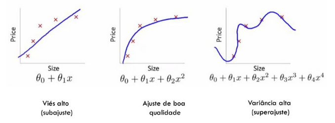
Bias-Variance Tradeoff
- Bias : Difference between average model predictions and true target values
- Variance : Variation in predictions across different training data samples
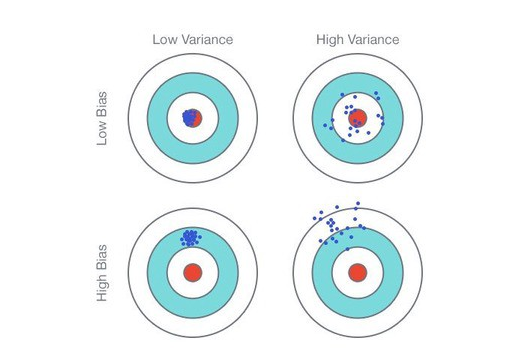
Evaluation Metrics
Regression :
- RMSE - Root Meam Squared Error
- MAPE - Mean Absolute Percent Error
- R^2 - How much better is the model compared to just pick the best constrant (R^2 = 1 - (model MSE / variance))
Classification :
Confusion Matrix
ROC Curve
Precision-Recall
- Precision : How correct we are when we what to predict be positive
- Recall (Sensitivity) : Fraction of negative that was wrongly predicted
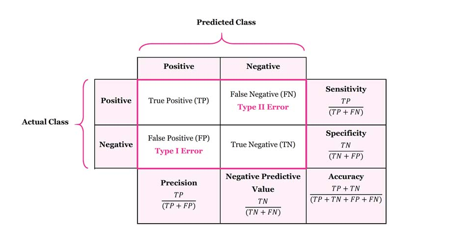
- Business Goal Evaluation
- Evaluate how the model is performing related to business goals
- Make the final decision to deploy or not
Evaluation depends on:
- Accuracy
- Model generalization on unseen/unknown data
- Business success criteria
If we need more data or have more data we can add data (Data Augmentation) or feature (Feature Augmentation)
- Prediction : The production data MUST have the same distribution as the training data
9.4.6 Exploring Machine Learning Toolset
INTRO TO AMAZON SAGEMAKER
Amazon SageMaker is a fully managed service that enables data scientists and developers to quickly and easily build, train, and deploy machine learning models
Components
- Notebooks : No setup required and we can install ML and DL frameworks, Spark and so on.
- Training Service : High on-demand trainnig enviroment can select the EC2 to run the experiment
- Hosting Service : Easy to deploy with auto-scaling API, A/B Testing and more
SAGEMAKER NEO
This is a new sageMaker capabilities helps developers take models train on any framework and run on any plataform
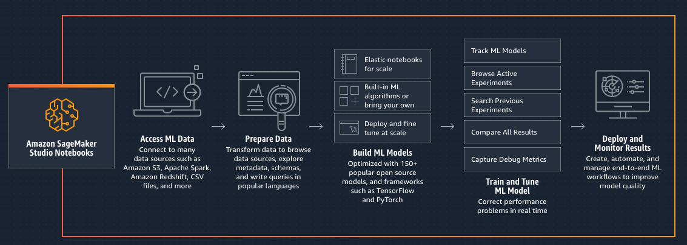
Neo Components
Compiler Container : read models in several formats (Tensorflow, pytorch, mxnet, xgboost) and convert to perform optimization
Runtime library
SAGEMAKER GROUND TRUTH
Tool on SageMaker to label the dataset, auto label part of dataset and send the rest to human perform the task.
Can setup end to end label job using Ground truth
Ground Truth use active learn that identify the data that is well understood and can be labeled automatically and which data is not well understood and need to be revised by humans
REKOGNITION
Image and facial recognition service, deep learning based, no experience required.
Key features
- Object and scene detection
- Facial analysis
- Face comparison
- Face recognition
- Confidence Score and Processed Images
DEEPLENS
DeepLens is wireless-enabled camera and development plataform integrated with AWS Cloud
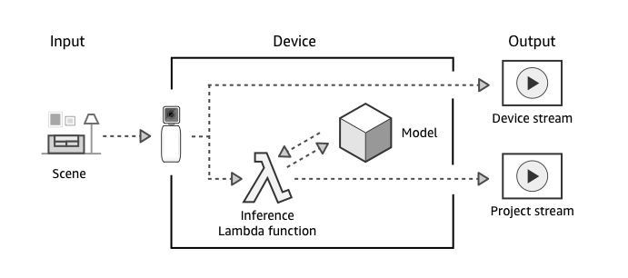
Step 1 : When turned on, the AWS DeepLens captures a video stream.
Step 2 : Your AWS DeepLens produces two output streams:
- Device stream – The video stream passed through without processing.
- Project stream – The results of the model’s processing video frames
Step 3 : The Inference Lambda function receives unprocessed video frames.
Step 4 : The Inference Lambda function passes the unprocessed frames to the project’s deep learning model, where they are processed.
Step 5 : The Inference Lambda function receives the processed frames from the model and passes the processed frames on in the project stream
Frameworks (MXNet, Tensorflow and Caffe)
POLLY
Text to Speech service help you application to talk and increase accessibility, with independent solution and high quality voices, supporting 24 languages
- Polly is compliant with SSML (Speech Synthesis Markup Language), XML based starts with
<speech> ... </speech>
LEX
Service to build conversation interfaces between application using voice and text, same tecnology of Alexa
Lex works with Amazon CloudWatch to monitoring the number of requests, latency and errors
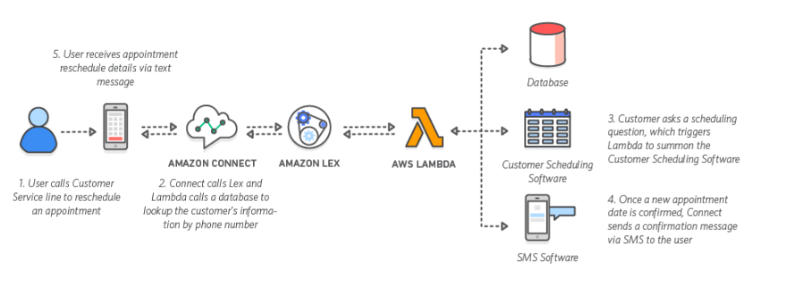
- User calls customer service line to reschedule an appointment
- Amazon connect calls Lex and AWS Lambda calls a database
- Once customer ask to reschedule, Lambda calls schedule software
- Once reschedule is confirmed Lambada send a text message to customer
TRANSCRIBE
Convert audio to text (Speech-To-Text)
Amazon Transcribe is ASR (Automatic Speech Recognition) service designed to Speech-To-Text applications
TRANSLATE
Neural machine translation service (batch, real-time, and on-demand translations)
Use Cases :
- Translating Web-authored content in real time and on demand
- Batch translating pre-existing content for analysis and insights
COMPREHEND
NLP and Text Analytics service
5 Main capabilities
- Sentiment : understand what user say (pos, neg, neutral)
- Entities : extract and categorize entities from unstructured text
- Languages : detect the language
- Key phrases : know phrases
- Topic modeling : help organize the text in topics
Social Analytics :
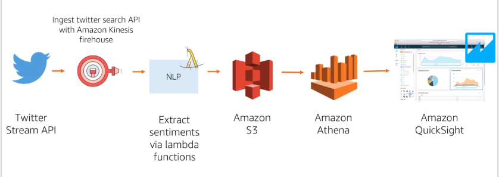
COMPREHEND MEDICAL
ML APIs specific to healthcare domain, an extend to Comprehend
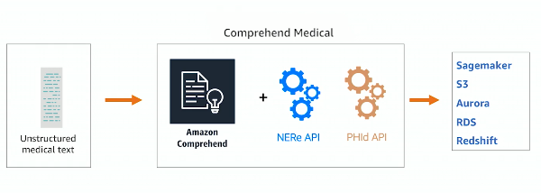
APIs :
- NERe: Json with all extract entities and relationship
- PHId: Protect health information on the text
FORECAST
Science of predicting future points in a time series based on historical data
- Accuracy is the most important factor in forecast
- Amazon Forecast is a fully managed accuracy forecast solution that uses deep learning models from over 10 years of ML experience
ELASTIC INFERENCE (EI)
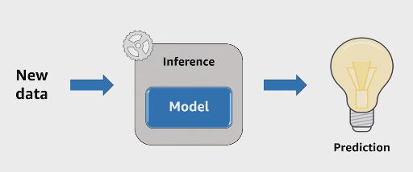
Amazon EI Accelerator sizes :
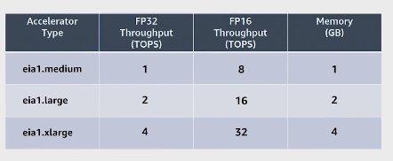
AMAZON PERSONALIZE
Fully-managed recommender engine
Real-time or batch recommendations
API Access
- Feed data via S3 or API
- Provide schema in Avro format
GetRecommendations(Recommended products, content, etc - similar itens)GetPersonalizedRanking(Rank a list of items, allows editorial control/curation)
Industrial Applications
Amazon Loockout :
- Equipment, metrics, vision
- Detects abnormalities from sensor data automatically to detect equipaments issues
- Monitor metrics from S3, RDs, RedShift, SaaS apps
Amazon Monitron
- End to end system for monitoring industrial equipmenet and predictive maintenance
Putting the blocks together
- Build our own alexa! : Transcribe -> Lex -> Polly
- Universal translator: Transcribe -> TRanslate -> Polly
- Jeff Bezos Detector : DeepLens -> Rekognition
- People on the phone are happy ? : Transcribe -> Comprehend
9.4.7 The Elements of Data Science
INTRO TO DATA SCIENCE
What is Data Science ? processes and systems to extract knowledge or insights from data (structured or unstructured)
What is Machine Learning ? set of algorithms used to improve predictions by learning from large amounts of input data
Learning : estimating function f by mapping data attribtes to some target value
Training set : labeled examples (x, f(x))
Goal : find the best approximation f_hat that best generalizes
Types:
- Supervised Learning : Models learn from training data that has been labeled.
- Unsupervised learning : Models learn from test data that has not been labeled.
- Semi-supervises learning (mix of label and un-label data)
- Reinforcement learning : Models learn by taking actions that can earn rewards.
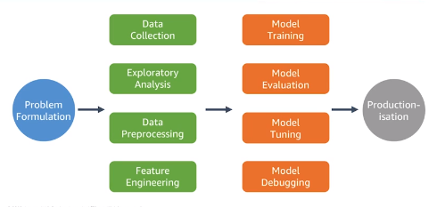
Key Issues in ML
Data Quality
- Consistency of the data
- Accuracy of the data
- Noisy data
- Missing data
- Outliers
- Bias
- Variance
Model Quality
- Overfitting : failure to generalize, model memorize the noise, high variance (small change in the training data lead to big changes in the results)
- Underfitting : Failure to capture important patterns, too simple, high bias (the results show systematic lack of fit in certain regions)
Linear methods
- Optimized by learning weights by applying (stochastic) gradient descent to minimize loss function
- Methods (Linear Regression and Logistic Regression)
Linear Regression
- The basic and simplest is univariant Linear Regression
- For Multiple linear regression includes N explanatory variables with N >= 2, scikit-learn implementation
sklearn.linear_model.LinearRegression- Sensitive to correlation between features, resulting in high variance of coefficients
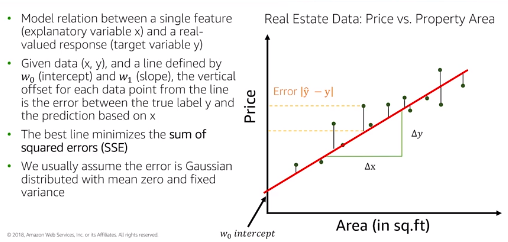
Logistic Regression
- Response is binary, Logistic Regression is estimate the probability of one of two classes
- Sigmoid function good representation of probability
- Logistic Regression does not well with outliers
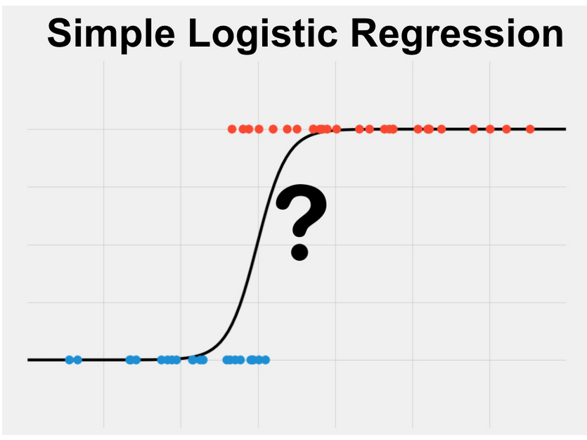
PROBLEM FORMULATION AND EXPLORAROTY DATA ANALYSIS
Transform business problem in a machine learning problem
Problem Formulation: The start point for any ML project
What is the problem you need to solve ? Precisely describe the business problem that you are trying to solve.
What is the business metric ? Determine the appropriate metric (Quality, Impact), convert the ML metric to Analytics metric
Is ML the appropriate approach ? Always good idea start simple, can the problem be solved with standard code ?, Do we have the data ?
What data is available ? Summary the data available, determine the gaps, what are the data sources ?
What type fo ML problem is it ? Decompose the business problem into a few models
What are your goals ? Establish ML goals and criteria for success
Data Collection: The process of acquiring training and/or test data
- Does not only occur on start of Data Science project / process, it is a procedure during the entire process/project and after
- Before put the model into production need to collect A/B test data
- After put the model in production need to collect more data to analyze the model performance
Open Data :
- AWS provides a comprehensive tool kit for sharing and analyzing data at ny scale, when organizations make data open on AWS, the public can analyze it quickly and easily with AWS scale computing and analytics services
Sampling : Selecting a subset of instances for training and testing
Representativity : sample needs to be representative of the expected population, ie, unbiased
Random sampling : each source data point has equal probability of being selected*
Stratified Sampling :
- Issue : With random sampling, rare subpopulations can be under-represented
- Stratified Sampling apply random sampling to each subpopulation, the sampling probability usually is the same for each stratum
Doing sampling need to pay attention on others things that may create bias on data:
Seasonality : Time of day, day of week, holidays, etc … Stratified sampling across these can minimize bias
Trends : Patterns can shift over time, and new patterns can emerge, compare models trained over different periods to detect.
Leakage :
Same point on train and test data (Train/Test bleed) inadvertent overlap of training and test data when sampling to create datasets
Using information during training or validation that is not in production
Labeling : Obtaining gold-standard answers for supervised learning
The first step on any Supervised learning problem
Labeling tools
- Excel
- Amazon Mechanical Turk
- Custom-built tools
EXPLORATORY DATA ANALYSIS
- ML Workflow
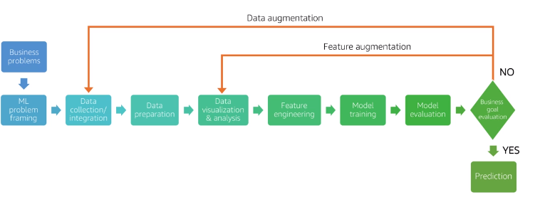
Domain Knowledge : Is critical for success of the exploratory data analysis, understand relationships, constraints, how data is generated
AWS domain experts is a team that can help you with your ML project, on Amazon ML Solutions Lab :
- Brainstorming
- Custom modeling
- Training
- On-site with Amazon experts
Data Schema :
- Data from multiple source
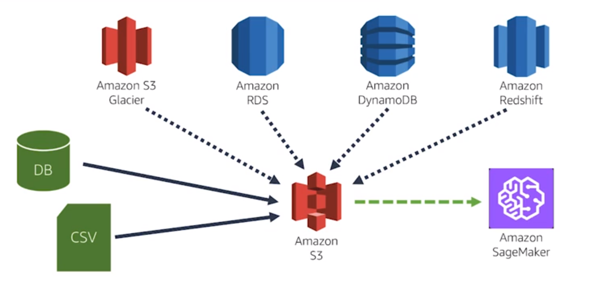
- Merge/join Data, we can use pandas to marge two data frames
df.merge(<df_1>, on=<key>, how = <'inner'> )
Data Statistics
Descriptive Statistics
Overall stats : number of instance (rows), attribute (columns)
Attribute stats (univariate)
- Numeric : mean, median, variance using
df.describe() - Categorical : histogram, most/last frequent values,
distplot() - Target stats : Class distribution
df.<attribute>.value_counts()ornp.bincount(y)
- Numeric : mean, median, variance using
Multivariate Stats
- Correlation
- Contingency table/Cross Tabulation
Sample 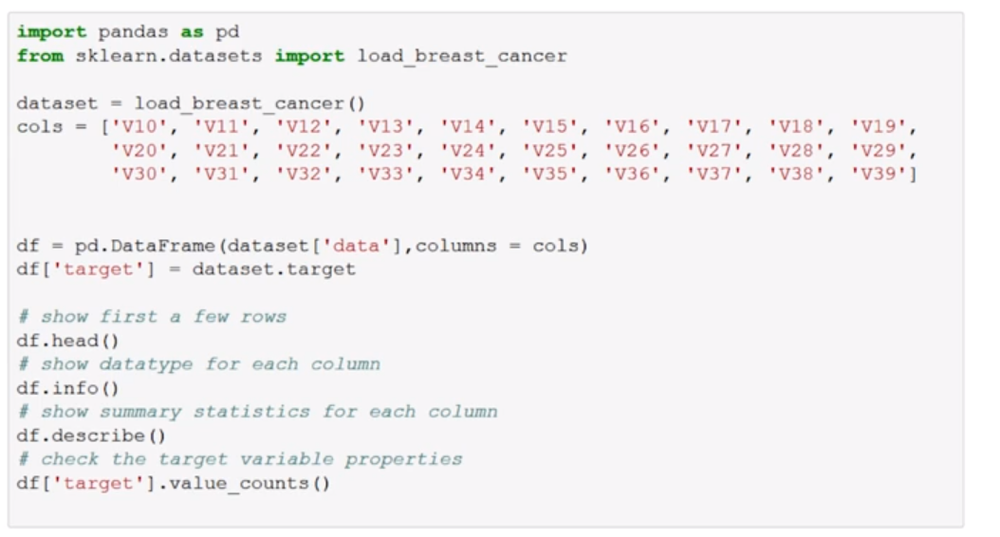
Basic Plots
- Density Plot
- Histogram
- Boxplot
- Scatterplot
- Scatterplot Matrix
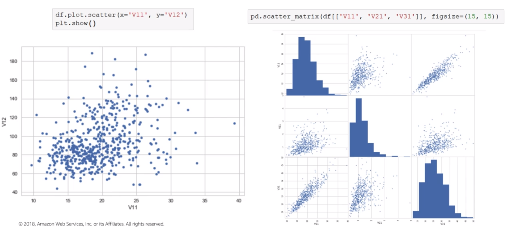
Correlation how we quantify the relationship ?
- 1 = there is a perfect linear relationship between the variables
- 0 = there is no linear relationship between the variables
- -1 = there is a perfect negative linear relationship between the variables
Correlation Matrices
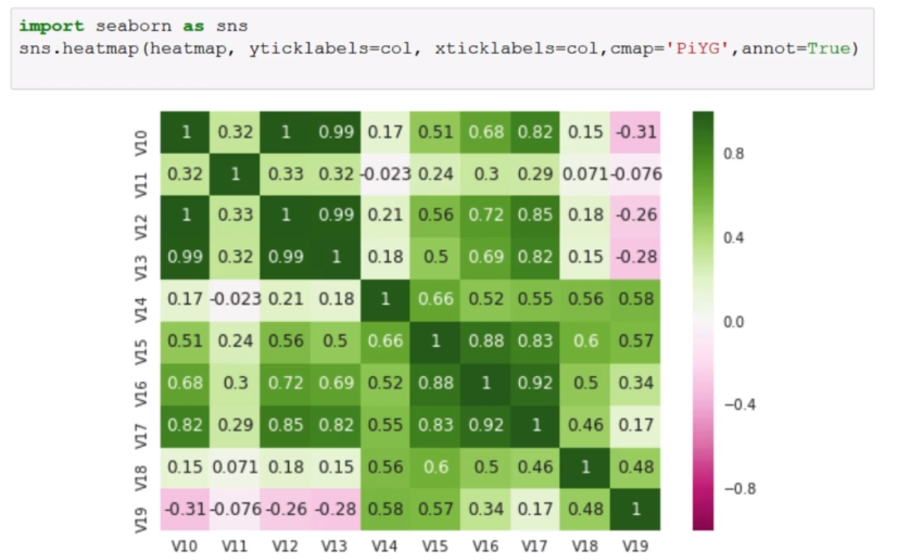
Data Issues
Messy data
- Data on different scale
- Different languages
- Mixed type of data
Noisy data
Biased data
Imbalanced data
Correlated data
Highly correlated features can cause collinearity problems and numerical instability
DATA PROCESSING AND FEATURE ENGINEERING
Algorithms typically expect to see numerical values, however, there are a lot categorical variables that can also be used.
Data Preprocessing : Encoding Categorical (discrete) Variables
Examples : Color (Green, Red, Blue) ; isFraud (false, true)
Categorical Types :
- Ordinal (ordered) : Size (L > M > S)
- Nominal (unordered): Color (blue, green, orange)
Encoding Ordinals : When mapping features variables to a predefined map, use the map function in pandas
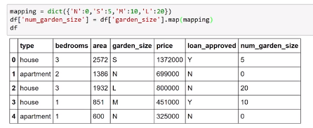
- Encoding labels / Predictor Variable using LabelEncoder for labels
from sklearn import preprocessing
le = preprocessing.LabelEncoder()
le.fit(["paris", "paris", "tokyo", "amsterdam"])
list(le.classes_)
# ['amsterdam', 'paris', 'tokyo']
le.transform(["tokyo", "tokyo", "paris"])
# array([2, 2, 1]...)
list(le.inverse_transform([2, 2, 1]))
# ['tokyo', 'tokyo', 'paris']
Encoding Nominals : One-Hot encoding is a better option, explode nominal attributes into many binary attributes, one for each discrete value, we can use OndeHotEncoder from sklearn or get_dummies from pandas
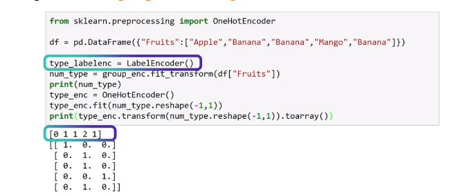
Encoding with many classes : we can define a hierarchy structure or group the levels by similarity
Missing Values
To identify we can use
df.isnull().sum()How deal with missing values
- Remove using
df.dropna(), risk to losing too much data, overfitting, IC, bias - Drop columns can result in underfitting and lose features
- Remove using
Before drop or imputing missing values, ask :
- What were the mechanisms that cause the missing values ?
- Are these missing values missing at random ?
- Are there rows or columns missing that you are not aware of ?
Imputing missing values :
Mean
Median
Most frequent (for categorical)
Advanced Methods
MICE (Multiple Imputation by Chained Equations) :
sklearn.impute.MICEImputerPython
fancyimputepackage- KNN impute
- SoftImpute
- MICE
- …
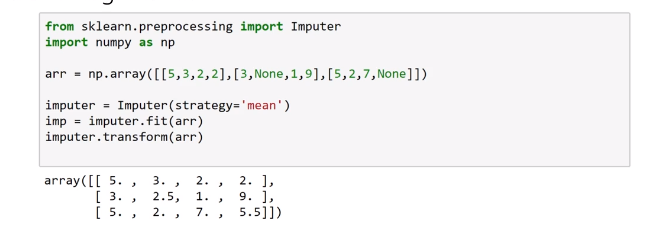
Feature Engineering : Create novel features to use inputs for ML models using domain and data knowledge, on scikit-learn we can use skelarn.feature_extraction package.
Consider :
- Square
- Multiplication
Filtering Selection : Selecting relevant features to use for model training
- Remove channels from image
- Remove frequencies from audio
Scaling : when we want value between -1 and +1 or 0 to 1, the range of features should be similar, same scale
Common choices in sklearn
Mean / Variance standardization :
sklearn.preprocessing.StandardScalermean = 0 , stdev = 1 for each data columnMinMax Scale :
sklearn.preprocesing.MinMaxScalermin = 0 , max =1Maxabs Scale :
skpearn.preprocessing.MaxAbsScalerRobusts Scale :
skpearn.preprocessing.RobustScalerNormalizer (for row) :
sklearn.preprocessing.Normalizerstedv = 1- L1 norm
- L2 norm
- Max norm
Transformation :
Polynomial :
sklearn.preprocessing.PolynomialFeatures, beware of overfitting if degree is too high, consider log and sigmoid transformations tooRadial Basis Function : Widely used in SVM as a kernel and Radio Basis Neural Networks (RBNNs), Gaussian RBF is the most common RBF used
Text-Based Features :
Bag-of-words model : Represent document as vector of numbers, one for each word (tokenize, count and normalize), can be extended to bag of n-grams
Count Vectorizer : Also called as Term frequency, includes lowercasing and tokenization on white space and punctuation, on skelarn the package is
sklearn.feature_extraction.text.CountVectorizerTiidfVectorizer : Term-Frequency Times Inverse Document frequency,it down weighted for common terms (e.g., ‘the’), we can use
sklearn.feature_extraction.text.TfidfVectorizerHasing Vectorizer : stateless mapper from text to term index, using
sklearn.feature_extraction.text.HashingVectorizer
MODEL TRAINING, TUNING, AND DEBUGGING
Supervised Learning : Neural Networks
- Perceptron : The simplest neural network, a single layer neural network
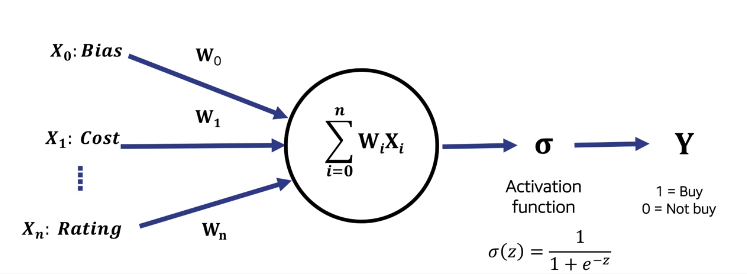
Neural network architecture : When we have multiple layers it become neural network
- Generally hard to interpret and expensive to train
- Sckit-learn :
sklearn.neural_network.MLPClassifier - Deep Learning Frameworks : MXNet, TensorFlow, Caffe, Pytorch
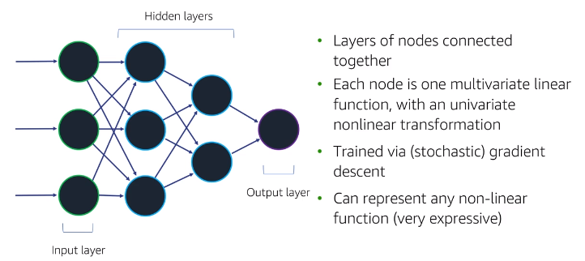
Convolutional neural networks : Very useful for image analysis
- Convolution layer : is to create next layer (Conv1D, Conv2D)
- Pooling layer : dimension reduction process (Max Pooling or Avg Pooling)
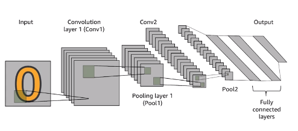
- Recurrent neural networks : used for time series and sequential features
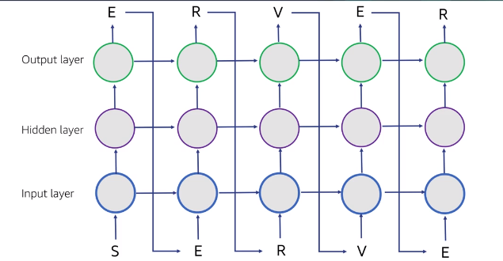
Supervised Learning : K-Nearest Neighbors
Define a distance metric (Euclidean, Manhattan, Any vector norm)
Choose the number of K neighbors
Find the K nearest neighbors fo the new observation that we want to classify
KNN is :
- Non-parametric, instance-based, lazy, ie, model is not defined by fixed parameters and it memorizing training data
- Require to keep original data set
- scikit-learn :
sklearn.neighbors.KNeighborsClassfier
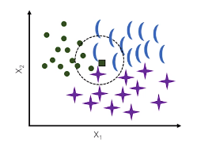
Supervised Learning : Linear and Non-Linear Support Vector Machines
Linear SVM
- Maximize the margin - the distance between the decision boundary (hyperplane) and the support vectors
- Scikit-learn :
sklearn.svm.SVC
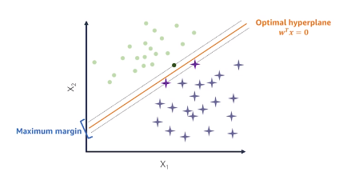
Supervised Learning: Decision Trees and Random Forests
- Entropy : Relative measure of disorder in the data source
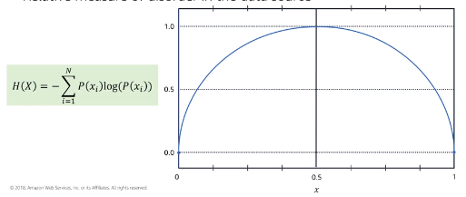
Decision Tree
Nodes are spited based on the feature that has the largest information gain (IG) between parent node and split nodes
One metric to quantify IG is to compare entropy before and after splitting
In binary case :
- Entropy is 0 if all samples belong to the same class for a node
- Entropy is 1 if samples contain both classes with equal proportion
Scikit-learn :
sklearn.tree.DecisionTreeClassiferMust prune the tree to reduce overfitting
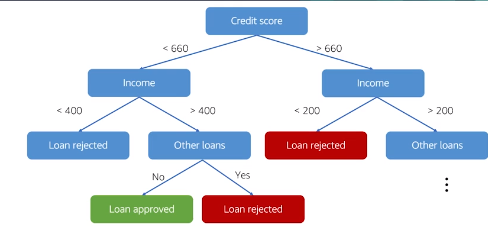
- Ensembles : LEarn multiple models and combine their results, usually via majority vote or averaging
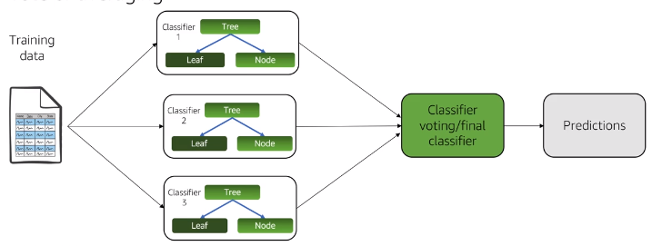
Random Forest
- Set of decision trees, each learned from a different randomly sampled subset with replacement
- Prediction : Average output probabilities
- scikit-learn :
sklearn.ensemble.RandomForestClassifier
Model Training : Validation Set
Training and Tuning are iterative process
Model Training : Improve the model by optimizing parameters or data
Model Tuning : Analyze the model for generalization quality and sources of underperformance such as overfitting.
Validation Set :
- Split training data in two parts (training and validation set)
- Use training set to train models
- Validation set to be used on debugging and tuning phase
- Test set will be used for measuring the generalization of your final model
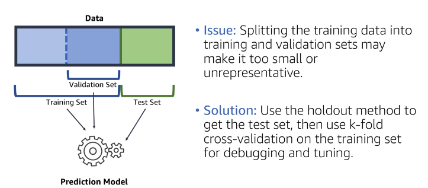
Model Training: Bias Variance Tradeoff
Bias: an error from flawed assumptions in the algorithm. High bias can cause an algorithm to miss important relationships between features and target outputs resulting in underfitting.
Variance: an error from sensitivity to small variations in the training data. High variance can cause an algorithm to model random noise in the training set, resulting in overfitting.
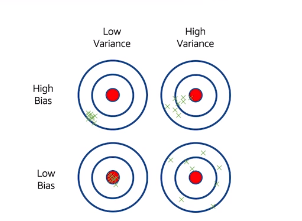
Model Tuning: Regularization
Regularization : Adding penalty score for complexity to cost function
L1 : Lasso - perform feature selection, in sklearn
sklearn.linear_model.LassoL2 : Ridge - reduce the weight, in sklearn
sklearn.linear_model.RidgeElastic Net : Linear regression with both
sklearn.linear_model.ElasticNet
Model Tuning: Hyperparameter Tuning
Model Tuning Choices
Neural Network :
- What Learning Rate ?
- How many nodes ?
- How many layers ?
Decision Tree or Random Forest :
- What is the minimum number of samples ?
- What I should use at the leaf node ?
SVM models :
- What is the optimum C parameter ?
Hyperparameter Techniques :
- Grid search (
sklearn.grid_search.GridSearchCV)`: Search for the best parameter combination over a set of parameters
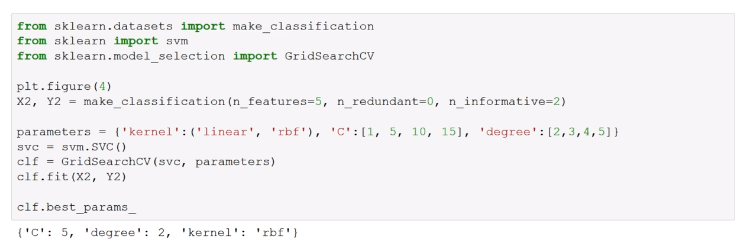
- Random search (
sklearn.grid_search.RandomizedSearchCV) : Each setting is sampled from a distribution over possible parameters values
Model Tuning : Feature Extraction
Techniques :
PCA (Principal component analysis)
- Unsupervised linear approach to feature extraction
- Finds patterns based on correlations
- scikit-learn :
sklearn.decomposition.PCA
LDA (Linear discriminant analysis)
- Supervised linear approach to feature extraction
- Transform to subspace that maximizes class separability
- Assumes data is normally distributes
- Used for dimensionality reduction of features
- Sklearn :
slkearn.discriminant_analysis.LinearDiscriminantAnalysis
Model Tuning: Bagging/Boosting
Bagging (Bootstrap Aggregating) : Randomly sampling original dataset with replacement
- High variance but low bias ? Use bagging
- Training many models on random subsets of data and average or vote on the output
- Reduce variance, keep bias the same
- Sklearn :
sklearn.ensemble.BaggingClassifier,sklearn.ensemble.BaggingRegressor
Boosting : Assign strengths to each weak learner, iteratively train learners using misclassified example by the previous weak learners
- High bias ? Use boosting
- Training a sequence of samples to get a strong model
- Sklearn :
AdaBoostClassifier,AdaBoostRegressorandGradientBoostingClassifier - XGBoost
MODEL EVALUATION AND MODEL PRODUCTIONIZING
Using ML Models in Production
Consider :
- Model hosting, deployment
- Pipeline to provide feature vector
- Model and data updating and versioning
- Monitoring and alarming
- Data and model security
- Customer privacy, fairness and trust
Types :
- Batch predictions
- Online predictions
- Online training
Model Evaluation Metrics
Need to link Business Metrics with ML Metrics
- Accuracy : How close of far we are from true values
- Precision : Proportion of positive predictions that are actually correct
- Recall : Proportion of positive set that are identified as positive
- F1-Score : Combination (harmonic mean) of precision and recall
Cross-Validation
K-fold cross-validation :
- Good for small training set
- Randomly partition data into k folds
- For each fold, train model on other k-1 folds and evaluate on that
- Train on all data
- AVG metric across K folds estimates test metric for trained model
Leave-one-out cross validation
- K = number of data points
- Used for very small datasets
Stratified k-fold cross validation
- Preserve class proportions in the folds
- Used for imbalanced data
- There are seasonality or subgroups
Metrics for Linear Regression
Mean squared Error : Average squared error over entire dataset, how close the prediction is to the outcome
R squared : R² is close to one indicates that lot of variability in the data can be explained by the model, Adjusted-R² is better metric for multiple variates regression
Using ML Models in Production: Monitoring and Maintenance
It’s important to monitor quality metrics and business impacts with dashboards, alarms, user feedback, etc.:
- The real-word domain may change over time
- The software environment may change
- High profile special cases may fail
- There may be a change in business goals
Performance deterioration may require new tuning :
- Changing goals may require new metrics
- A changing domain may require changes to validation set
- Your validation set may be replaced over time to avoid overfitting
Amazon SageMaker
Train, build and deploy ML models at scale
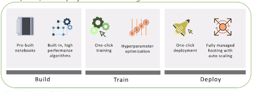
Common Mistakes
- Solve the wrong problem
- The data was flawed
- The solution did not scale
- Final result does not match with the prototype’s results
- It takes too long to fail
- The solution was too complicated
- There were not enough allocated engineering resources to try on long term ideas
- There was a lack of a true collaboration
9.4.8 Machine Learning Security
SECURITY OF THE CLOUD
Design Principles
- Implement a strong identity foundation : Lesat privilege and enforce separation of duties
- Enable traceability : Monitor, alert and audit actions in real time
- Apply security at all layers : Apply a defense in depth approach
- Automate security best practices : Implement controls that are defined and managed
- Protect data in transit and at rest : Classify the datainto sesitivity levels, use encryption and access control
- Enforce the principle of least privilege : Access only to people that really need
- Prepare for security events : Have an incident management process, run simulations and use tools to increase speed for detection, investigation and recovery.
AWS Shared Responsibility
AWS is responsible for protecting the global infrastructure that runs all of the services offered in the AWS Cloud. This infrastructure comprises the hardware, software, networking, and facilities that run AWS services.
As an AWS customer, you are responsible for securing your data, operating systems, networks, platforms, and other resources that you create in the AWS Cloud. You are responsible for protecting the confidentiality, integrity, and availability of your data and for meeting any specific business and/or compliance requirements for your workloads
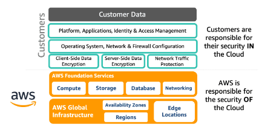
Resources :
AWS Global Infrastructure
- Availability Zones is like a logical Data Center located in a AWS Region
- The regions are physically separated and if one goes down does not affect each other

Data Center Security
- Perimeter Layer : Principle of least privilege, video surveillance, intrusion detection …
- Environmental Layer : locations to mitigate risk like flooding and others
- Infrastructure Layer : backup power equipment, HVAC systems and fire suppression
- Data Layer : decommission using NIST800-88, external auditors to inspect DC, servers that notify any attempt to remove data
Compliance on AWS
AWS communicates about its security and control environment to customers by:
- Obtaining industry certifications and independent third-party attestations.
- Publishing information about AWS security and control practices in whitepapers and website content.
- Providing certificates, reports, and other documentation directly to AWS customers under an NDA (as required).
- Providing security features and enablers, including compliance playbook and mapping documents for compliance programs.
Resources
SECURITY IN THE CLOUD
Identity and Access Management (IAM)
- IAM is a centralized mechanism for creating and managing individual users and their permissions with your AWS account.
- IAM group is a collection of users
Type of AWS Credentials :
- Username and Password
- MFA
- User Access Keys
- Amazon EC2 Key pairs
Detective Controls
- AWS CloudTrail records API calls made on your account
- AWS CloudWatch can be used to monitor resources and logs, send notifications, and initiate automated actions for remediation.
- Amazon GuardDuty is an intelligent threat detection service, identifies suspected attackers
- AWS Trusted Advisor is a service that draws upon best practices and inspects your AWS environment making recommendations for saving money, improving system performance, or closing security gap
- AWS VPC Flow logs service that capture information about the IP traffic going to and from network interfaces in your VPC.
- AWS Security Hub gives you a single pane of glass view of your high-priority security alerts and compliance status across AWS accounts.
- AWS Config is a continuous monitoring and assessment service that can help you detect non-compliance configurations almost in real tim
Infrastructure Protection
Amazon Virtual Private Cloud (Amazon VPC) allows you to isolate your AWS resources in the cloud. A VPC enables you to launch resources into a virtual network that you’ve defined and that closely resembles a traditional network that you’d operate in your own data center.
- Subnet Routing : Enable you to group isntances and resources based on security and Operational needs
- Network ACLs : A layer of security within yoru VPC. A Network access control list (ACL) is an optional layer of security that acts as a firewall for controlling traffic at the subnet level
- Security Group : acts as a virtual firewall for instance to control inbound and outbound traffic
- AWS Firewall Manager : is a security management service that allows you to centrally configure and manage AWS WAF rules
- AWS Direct Connect is a cloud service solution that is used to establish a dedicated and secure network connection from your premises to AWS.
- AWS CloudFormation automates and simplifies the task of repeatedly creating and deploying AWS resources in a consistent manner
- Amazon Inspector is an automated security assessment service that helps improve the security and compliance of applications deployed on AW
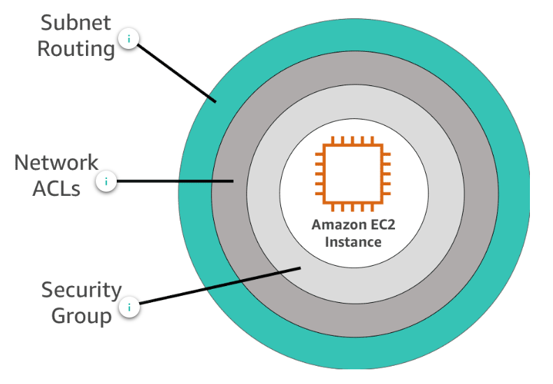
Data Protection
- Protection at Rest : You encrypt your data before sending it to AWS and AWS sncrupts data on your behalf after it has been received.
- Protection in Transit : data that gets transmitted from one system to another is considered data in transit, recommend to use HTTPs, VPN, etc
AWS Well-Architected Tool is a self-service tool that is designed to help customers review AWS workloads at any time.
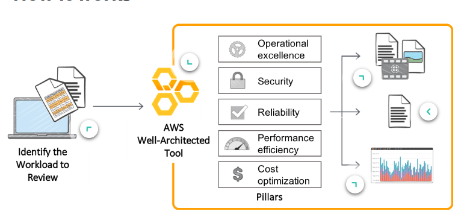
AUTHENTICATION AND AUTHORIZATION
Authentication
- User : Name Operator, human or machine and set of permanent credentials and authentication method
- Group: Collection of users
- Role : is not permissions, a Role is authentication method, temp credentials and also an authentication method
Authorization
- Policy Docs : Can be attached to user, group or role, list specific APIs allowing against each resources in certain conditions, check the actions
SECURITY GROUPS AND NACLs
- Security groups apply to instance level, works like a firewall on each EC2 instance that by default block all incoming traffic, we need to specify the rules on security group to allow specific action/traffic informing protocol and port
- NACLs apply to subnet level, inbound and outbound role set
9.4.9 Math for Machine Learning
VECTORS
- Column Vectors,
n x 1
- Row Vectors,
1 x n[1 0 -1 2] - n-Dimensional, 2D is a matrix
m x n
In Machine Learning we usually work with 2D objects m x n matrix
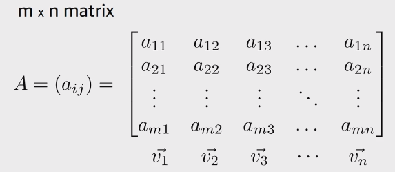
Operations
- Addition : Element wise addition if the vectors/matrix are the same length, (adding the number of the same position)
- Scalar Multiplication: Element wise multiplication
- Transpose, flip over the diagonal
- Subtraction as Mapping
Measures of Magnitude
Norm : How we measure of distance (one vector to the other)
Properties :
1: All distances are non-negative
2: Distances multiply with scalar multiplication
3: Triangle equality , If I travel from A to B then B to C, that is at least as far as going from A to C
Type of Norms
- Euclidean Norm
- L1 Norm :
np.linalg.norm(<vector>, ord = 1) - L2 Norm :
np.linalg.norm(<vector>, ord = 2)
MATRICES
Dot Products
9.4.10 Deploying Machine Learning Applications
INTRO TO AMAZON SAGEMAKER-CR
Componenets
- Notebook service
- Training Service
- Hosting Service
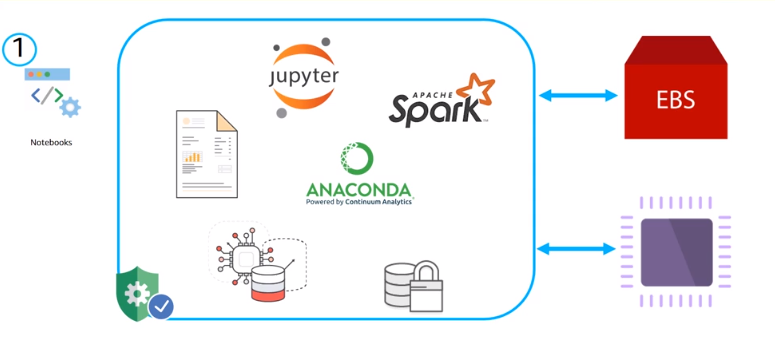
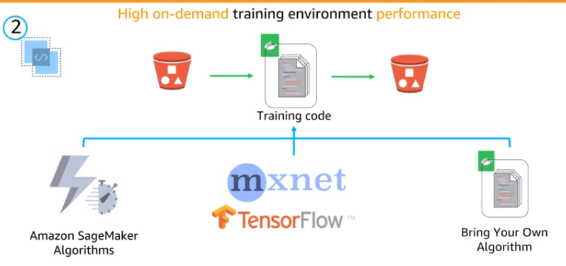
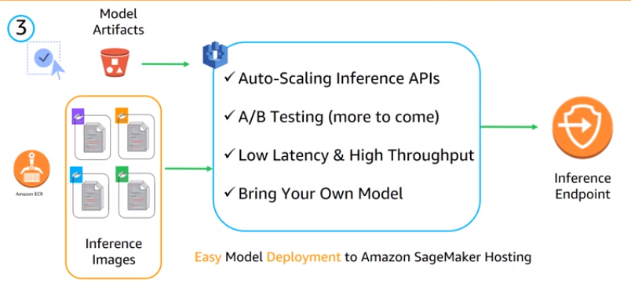
Expore - __Targeting Direct Marketing with Amazon SageMaker XGBoost_
INTRO TO AMAZON SAGEMAKER NEO-CR
Operationalization :
Framework : Choose the best framework for your task
Models : Build the model using the framework
Train Models to Make Predictions : Train model using sample data
Integrate : Integrate the model with the application
Deploy : Deploy the application, the model, and the framework on a platform
NEO
The NEO Compiler reads the model and save it in several formats
NEO convert the functions and operations in non-specific functions and operations
NEO perform several optimization (2x faster)
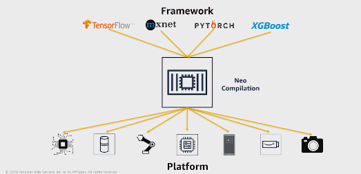
AUTOMATIC MODEL TUNING IN SAGEMAKER=CR
Hyperparameters
NN:
- Learning Rate
- Layers
- Regularization
- Drop-out
Trees:
- Number
- Depth
- Boosting step size
Clustering
- Number
- Initialization
- Pre-processing
Tuning
Manual
- Defaults, guess, and check
- Experience, intuition, and heuristics
Brute force
- Grid
- Random
- Sobol
Metal Model
Gaussian process regression models objective metric as a function of hyperparameters
- Assumes smoothness
- Low data
- Confidence estimates
Bayesian optimization decides where to search next
- Explore and exploit
- Gradient free
Expore - Gluon CIFAR-10 Hyperparameter Tuning
Advanced Analytics with Amazon SageMaker
Building and Training ML Models using SageMaker and Spark
Why Spark ?
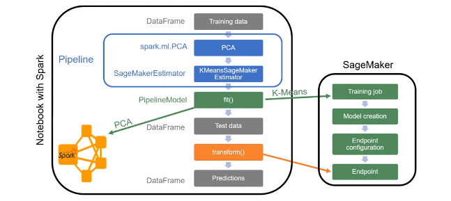
Spark runs locally and SageMaker noteboks
SageMaker-Spark SDK (Scala and Python)
- SageMaker algorithms are compatible with Spark MLLib
Connect SageMaker notebook to a Spark Cluster (EMR)
Building ML pipelines using SageMaker and Spark
ML Pipeline with PCA and K-Means
ANOMALY DETECTION
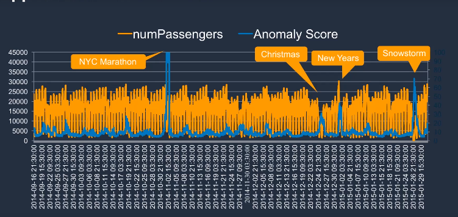
How Rondom Cut works ?
- It is a tree based algorithm
- Create multiple trees in parallel
- A point is an anomaly if its insertion greatly increases the tree size
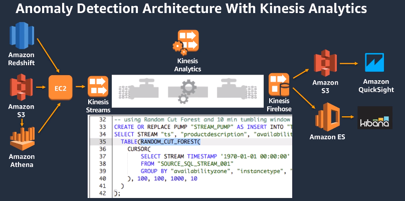
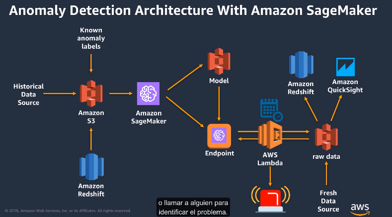
9.4.11 Data Engineering
S3
- Buckets must have a global unique name
- Objects (file) have a key. The key is the FULL path :
<my_bucket>/my_folder/my_file.txt - Max 5TB
- Backbone for ML services
- Perfect use case for Data Lake, with infinite size , 99.999999999% durability across multiple AZ and 99.99% availability (not available 53 min a year)
- Obejct storage supports any file format (CSV, JSON, Parquet, ORC, Avro, Protobuf)
- We can partition the data by date, by product or any strategy we would like, some tools perform this task forus (Glue and Kinises)
| Classes | Details | Use Case |
|---|---|---|
| S3 Standard - General purpose | * 99.99% availability (53min a year not available) * Used for frequently accessed data * Low latency and high throughput * Sustain 2 concurrent failures |
Big data analytics, mobile and gaming applications |
| S3 Standard-Infrequent Access IA | * For data that is less frequently accessed, but requires rapid access when needed * Low cost than S3 standard, cost on retrieval * 99.9% availability |
Used for Disaster recovery |
| S3 One Zone-Infrequent access | * High durability 99.999999999% in a single AZ, data lost when AZ distroied * 99.5% availability |
Storing secondary backup copies of on-prem data, or data you can recriate |
| S3 Glacier Instant Retrieval Low cost for archive/backup |
Instant retrieval : ms retrieval , min storage duration 90 days Flexible Retrieval : Expedite 1 to 5min , Standard 3 to 5 hours, min duration 90 days Deep Archive : Standard 12hrs, bulk 48hrs, min duration 180 days, for long archive |
|
| S3 Intelligent Tiering | * Small monthly monitoring and auto-tiering fee * Move objects automatically between Tiers based on usage * No retrieval charge * Frequent Access : default * Infrequent Access > 30 days * Archive Instant Access > 90 days * Archive Access 90 to 700+ days * Deep Archive Access 180 to 700+ days |
We can move files between storage classes manually or via configuration using Lifecycle Rules
Security : Encryption for objects
- SSE-S3 : encrypt using keys managed by AWS
- SSE-KMS : use Key Management Service (Customer Master Key)
- SSE-C : when we want to manage the keys
- Client Side Encryption
On ML , SSE-S3 and SSE-KMS will be most likely be used SS3 means Service-side-encryption
S3 Bucket policies : We can use the policies to grant access (including Cross Account) to bucket or force objects to be encrypted on upload
- Today we can use the default encryption option on S3 and every document sent to bucket will be encrypted by default
AWS Kinesis
Kinesis is a managed alternative to Apache Kafka, it is used to real-time streaming process of big data, used for application logs, metrics, IoT, clickstreams and data replicated on 3 AZs
Services :
Kinesis Data Streams : low latency streaming ingest at scale
- Stream are divided into Shards/Partitions and by default data retention is 24hrs, multiple appls can use the same stream and once data is inserted it cannot be deleted (immutability)
- It is for real-time

Kinesis Data Analytics: real-time analytics on streams using SQL
Data Analytics will take data from Firehose or Data Streams, perform modifications using SQL and send it to analytic tools
Used to streaming ETL, continues metric and reponsive analytics (filtering)
Machine Learning on Kinesis Data Analytics (two algorithms)
- RANDOM_CUT_FOREST (Used for anomaly detection on numeric columns, use recent history to compute model)
- HOTSPOTS (locate and return information about dense regions)

Kinesis Firehose: load stream into S3, Redshift, ElasticSearch and splunk
- To store data in two target destination, it reads data up to 1MB, can be transformed by lambada function and write in batches into S3, RedShift, ElasticSearch, custom destionation or 3rd party (splunk, mongo, etc)
- It is near real-time to ingest massive data, auto-scale, supporting many formats (csv, json, orc)

Kinesis video Stream: stream video in real-time
- real-time video stream to create ML applications

GLUE DATA CATALOG
Metadata repository for all tables
- Automated schema inference
- Schema visioned
- Integration with Athena or RedShift (schema & data discovery)
- Glue Crawlers can help build the Data Catalog
GLUE DATA CRAWLERS
- Go through the data to infer schema and partitions, works in JSON,CSV and PARQUET
- Will extract partition based on how S3 is organized
GLUE ETL
- Transform data, clean, modify (Join, filter, dropfields, map), generate code in python or spark and the target can be S3, JDBC, RDS, RedShift or Glue Catalog
- ML Transformation : FindMatches ML identify duplicated or matching records in database
- Jobs run on Spark Platform
- Formats (csv, json, avro, parquet, orc and xml)
- Also can use any apache spark transformatino (like k-means)
DATA STORE IN MACHINE LEARNING
- RedShift : Data warehouse, OLAP processing
- RDS, Aurora : Relation store OLTP
- DynamoDB : NoSQL data store
- S3: Object store, serveless
- OpenSearch (previously Elastic Search) : Indexing data
- ElastiCache : Caching mechanism
Service to move data from one place to another (S3, RDS, DynamoDB,Redshift, EMR), ETL service where we can manage the task dependencies, retry and notifies on failure
What is the difference between GLUE and DATA PIPELINE ?
- Glue is Apache Spark focus , run Scala or Python jobs
- Data Pipeline is an orchestration service where we have more control over the environment, compute resources and code and allow us access EC2 or EMR
AWS Batch run jobs as Docker images, no need to manage cluster, fully serveless and we can schedule batch jobs using Cloud Watch Events or Orchestrate batch jobs using AWS Step Functions
DMS DATABASE MIGRATION SERVICE
Quickly and securely way to migrate databases to AWS, it supports Oracle to Oracle or MSSQL to Aurora, we can use continuous Data Replication using CDC and it the replication must be performed EC2 instance
Step Functions is used to Orchestrate and design workflows
9.4.12 Exploratory Data Analysis
PANDAS
Data Frames : Similar table structure
Series : 1D structure
Numpy : arrays and math
Data Visualization
- Boxplot
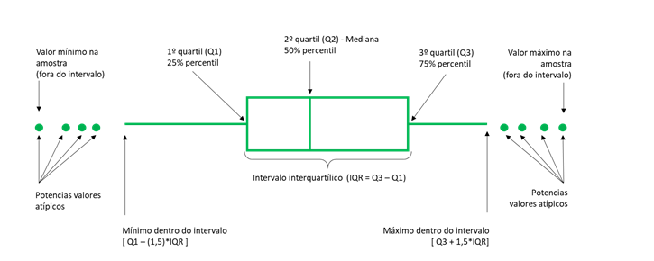
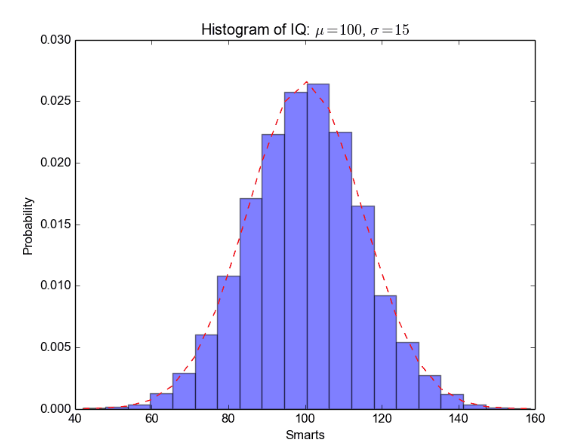
Seaborn : Python data visualization library based on matplotlib
Type of Data
- Numerical (discrete 5 , 20 or continuous 2.56, 545.67)
- Categorical (qualitative Gender)
- Ordinal (Categorical with math meaning Ranking)
Data Distribution
- Normal
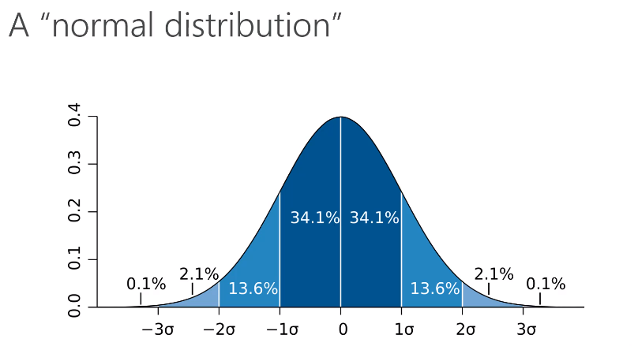
Probability Mass Function
- Working with Discrete data, visualize the probability of discrete data occur
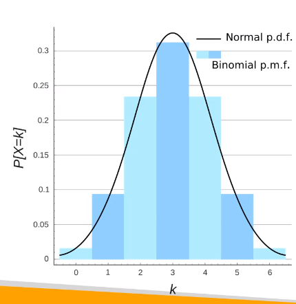
Poisson Distribution
- Example of probability mass function, series of events (success or failure)
Binomial Distribution
Work with discrete data
Time Series
- Trends
- Seasonality
- Seasonality + Trends + Noise = Time series
Amazon Athena
Serveless interactive queries of S2 data lake
- Presto under the hood
- Serverless
- Supports (CSV, JSON, ORC, PARQUET, AVRO)
- Pay-as-you-go
- Save money using columnar formats (ORC, Parquet)
Amazon QuickSight
Business analytics and visualizations in the cloud
- Build visualizations
- Perform ad-hoc analysis
- Serveless
- Data Sources : RedShift, Aurora / RDS, EC2, Athena, S3
- SPICE : In-memory calculation makes QuickSight fast
- ML Insights : Anomaly detection, Forecasting, Auto-narratives
Amazon EMR Elastic MapReduce
- Managed Hadoop framework on EC2
- Includes Spark , HBase, Presto, Flink, hive and more
- EMR Notebooks
-
Components that runs on top of spark core:
Spark Streaming
Spark SQL
Graph X
MLLib
- Classification : Logistic regression, naive bayes
- Regression
- Decision trees
- Recommendation ALS
- Cluster K-means
- LDA (Topic modeling)
- ML Workflow utilities (pipeline, feature transformation, etc)
- PCA, SVD, statistics, others
Feature Engineering
“Applied machine learning is basically feature engineering” - Andrew Ng
- Which features should I use ?
- Do I need to transform these feature ?
- How do I handle missing data ?
- Should I create new feature ? Transform ? Normalize ?
Imputing Missing Data
Replace by mean ? median ?
Works on column level
Cannot use on categorical features
If not many rows and drop does not bias the data, maybe reasonable
Use Machine Learning
- KNN , average of group of features
- Deep Learning, build ML to impute the data, works well for categorical data
- Regression (MICE)
Get more data
Unbalanced Data
Large discrepancy between positive and negative cases
- Oversampling : Duplicate samples from the minority class
- Undersampling : Instead of creating more positive samples, remove negative ones, remove data is not the right answer
- SMOTE : Synthetic Minority Over-sampling TEchnique generate new samples using nearest neighbors
Outliers
We can use Stardard deviation to identify outliers
AWS Random Cut Forest : outlier detection
Binning
- Bucket observations together based on ranges of values
- Transform numeric data to ordinal data
Encoding
Transform data into some new representation
One-Hot encoding
Scalling / Normalization
- Some models prefer feature data to be normally distributed
- Scikit learn MinMaxScaler
Amazon SageMaker Ground Truth and Label Generation
- Ground Truth creates its own model as images are labeled by people
9.4.13 Modeling Part 1 Basic
DEEP LEARNING
Frameworks
- Tensorflow / Keras
- MXNet
model = Sequential()
model.add(Dense(64, activation='relu', input_dim=20))
model.add(Dropout(0.5))
model.add(Dense(64, activation='relu'))
model.add(Dropout(0.5))
model.add(Dense(10, activation='softmax'))
sgd = SGD(lr=0.01,decay=1e-6, momentum=0.9, nesterov=True)
model.compile(loss='Categorical_crossentropy', optimizer=sgd, metrics=['accuracy'])
Types os Neural Network
- Feedforward
- Convolutional (CNN) : Image
- Recurrent (RNN) : deal with sequence in time (stop price, words sequence, translation, etc) - LSTM, GRU
Activation Functions
It is a function inside the node
Types :
- Linear : do anything
- Binary step function : on or off
- Sigmoid / Logistic / TanH : Computational expensive and Vanishing Gradient problem
- ReLU (Rectified Linear Unit) : Easy and fast, zero or negative problem with Dying ReLU
- Leaky ReLU : Solve dying ReLU
- Parametric ReLU (PReLU) : complicated
- Exponential Linear Unit (ELU)
- Swish : for really deep neural network , developed by google
- Maxout : not practical double the params
- Softmax : used on final layer of multiple classification problem
Choosing an activation function
- For multi clas : Softmax
- RNNs : TanH
- Others: Starts with ReLU, if need do better, Leaky ReLU, PReLU, Maxout, Swish
CNNs
Data that does not neatly align into columns (images, translation, sentence classification, sentiment analysis)
CNN with Keras / TF
Source must be : width x length x color
Conv2D, Conv1D and Conv3D
MaxPooling2D used to reduce the 2D layer
Flatten convert 2D layer to 1D layer
Typical architecture :
- Conv2D -> MaxPooling2D -> Dropout -> Flatten -> Dense -> Dropout -> Softmax
Specialized CNN architectures
- LeNet-5 : Good for handwriting recognition
- AlexNet : Image classification
- GoogLeNet : Deepr introduce the inception modules (groups of convolution layers)
- ResNet (Residual Network) : Even deepr
RNNs
- Time-series data
- Machine translation, image captions, machine-generated music
RNN Topologies
- Sequence to sequence : predict stock price
- Sequence to vector : wordsin a sentence to sentiment
- Vector to sequence : create captions from an image
- Encoder -> Decoder ( sequence -> vector -> sequence ) : machine translation
Architectures : RNN vs GRU vs LSTM
- LSTM (Long Short-Term memory Cell)
- GRU (Gated Recurrent Unit)
Deep Learning on EC2 / EMR
- EMR supports Apache MXNet and GPU types
- Types :
- P3 : 8 Tesla V100 GPUs
- P2 : 16 K80 GPUs
- G3 : 4 M60 GPU
- Deep Learning AMI’s
Tuning Neural Networks (IMPORTANT TOPIC ON EXAM)
Learning Rate : How far apart these samples are ?
- Large learning rates can overshoot the correct solution
- Small learning rates increase the training time
Batch Size : How many trainig samples are used within each batch of each epoch
- Smaller batch tend get stuck in local minima
- Large batch size can end up getting stuck and onverge on wrong solution
Regularization
Techniques to prevent overfitting, ie, high accuracy on training data, but lower on test or evaluation data
Dropout : Removing neurons at random , prevent specific neuron overfitting
Early Stopping : Stop the training after some epochs
L1 and L2
- L1 : Sum of weights, “feature selection” reduce dimensionality
- L2 : Sum of square of weights
Gradients
Vanishing Gradient Problem : when the slope of the learning curve approaches zero
Fix :
- Use LSTM
- Residual Networks
- Better choice of activation function ReLU
Confusion Matrix, Precision , Recall, F1, AUC
- Recall (Sensitivity) : Percent of positives rightly predicted, good when you care about false negatives (fraud detection)
- Precision : Percent of relevant results, correct positives, good when care about false positives (medical screening, drug testing)
- Specificity : True negative rate
- F1 Score : Harmonic mean of precision and sensitivity (recall)
- RMSE : Root mean squared error, accuracy measurement
- ROC : Recall vs false positive rate
- AUC : Are under the curve, used to comparing classifiers
Ensemble Learning (Bagging & Boosting)
- Bagging : Generate N new training sets by random sampling with replacement, each resampled model can be trained in parallel, avoid overfitting
- Boosting : Observations are weighted, some will take part in new training more often, training is sequential , each classifier takes into account the previous one’s success.
9.4.14 Modeling Part 2 SageMaker
SageMaker is built to handle the entire Machine LEarning workflow
Data Prep on SageMaker
- Data must come form S3
- Spark integrates with SageMaker
- Scikit_learn, numpy, pandas all at your disposal within a notebook
Training on SageMaker
Create a training job
- URL of S3 bucket with training data and output
- ML compute resources
- ECR (Amazon Elastic Container Registry ) path to training code
Training options
- Built in training algorithms
- Spark MLLib
- Custom python tensorflow, pytorch, MXNet code
- Your own docker image
- Algorithm purchase from AWS marketplace
Deploying Trained Models
- Save trained model on S3
- Deploy endpoint for making individual predictions on demand or via Batch transform to get predictions for an entire dataset
- Inference pipeline (complex processing)
- Neo for deploying to edge devices
- Elastic Inference, accelerating DL models
- Auto-scaling increase the number of endpoint as needed
SageMaker Built-In Algorithms
Linear Learner : Can handle regression and classification, input format : RecordIO and CSV, support File or Pipe mode
Training data must be normalized and shuffled
Use SGD , Adam, AdaGrad and train multiple models in parallel tuning with L1 and L2
Hyperparameters :
- Balance_multiclass_weights : Gives each class equel importance in loss functions
- Learning_rate
- mini_batch_size
- L1
- Wd : weight decay - L2 regularization
Instance Types : Single or multi-machine CPU or GPU, multi GPU does not help
XGBoost : eXtreme Gradient Boosting, boosted group of Decision trees, new trees correct the errors of previous one, use gradient decent to minimize loss
Hyperparameters :
- Subsample : Prevent overfitting
- Eta : Step size shrinkage, prevents overfitting
- Gamma : Minimum loss reduction to create partition
- Alpha : L1
- Lambda : L2
- eval_metric : optimize on AUC, error and rmse
- scale_pos_weight : adjust balance of positive and negative weights
- max_deph : max depth of the tree
Instance Types : CPU only, Memory-bound, M5 is a good choice, if using GPU training P3
Seq2Seq : Input and output is a sequence of tokens, use for ML translation, text summarization and speech to text, implemented with RNNs and CNNs
Expect RecordIO-Protobuf format
Must provide training and validation data,also vocabulary files
Pre-trained available
Hyperparameters :
- Batch_size
- Optimizer ( adam, sgd, rmsprop )
- Learning_rate
- Num_layers_encoder
- Num_layers_decoder
- Can optimize on Accuracy, BLEU score (Compares against multiple reference tanslation), perplexity (cross-entropy)
Instance Types : Can only use GPU - P3
DeepAR : Forecasting one-dimensional time series data, use RNNs, allows you to train the same model over several related time series and find frequencies and seasonality
Input JSON lines
Each record must contain start (timestamp) and target (data time series)
Hyperparameters :
- Contect_lenght
- Epochs
- mini_batch_size
- Learning_rate
- Num_cells
Instance Types : CPU or GPU
BlazingText : Used for text classification, predict labels for a sentence
Word2vec : create a vector of words, find similar words, can be used in some modes (Cbow - Continuous Bag of Words, Skip-gram, Batch skip-gram)
Hyperparameters :
Word2Vec :
- Mode (batch_skipgram, skipgram, cbow)
- Learning_rate
- Window_size
- Vector_dim
- Negative_samples
Text Classification
- Epochs
- Learning_rate
- Word_ngrams
- Vector_dim
Instance Types : single CPU - C5 or GPU - P2 or P3
Object2Vec : It is a word2vec, generalized to handle things other than words, compute nearest neighbors of objects
Input must be tokenized into integers
Process data into JSON
Train with two input channels (encoders) and a comparator
Encoders : (AVG pooled, CNN or LSTM)
Comparator : Feed-forward Neural Network
Hyperparameters :
- Dropout, epochs, early stopping, LR, Batch_size, layers, activation function, optimizer, WD
Instance Types : CPU or GPU
Object Detection : Identify all objects in an image, can train from scratch or use pre-trained model based on ImageNet
- Input : Image or RecordIO
- Use CNN, base can be VGG-16 or ResNet-50
- Transfer learning mode / Incremental training
- Hyperparameters : mini_batch_size, LR, Optimizer (SGD, adam, rmsprop, adadelta)
- Instance types : CPU, CPU for inference
Image Classification : Assign one or more lables to an image
- MXNet use RecordIO format or raw jpg/png
- Image format requires lst to associate image index, class labels
- ResNet CNN under the hood
- Transfer learning mode
- Default image size 3-channel 224x224 (imageNets dataset)
- Hyperparameters : batch size, LR, Optimizer
- Optimizer : WD, beta 1, beta 2, eps, gamma
- Instance : CPU - P2 or P3
Semantic Segmentation : Image classification, produces a segmentation mask
- Input: PNG or JPG
- Built on MXNet Gluon and Gluon CV
- Hyperparameters : Epochs, LR, batch size
- Instance type : only GPU P2 or P3
Random Cut Forest : AWS Algorithm for Anomaly detection, unsupervised and detect unexpected spikes in time series. It creates a forest of trees where each tree is a partition of training data
- Input : CSV or RecordIO-protobuf
- Can use File or Pipe mode
- RCF is on Kinesis Analytics too, works on streaming data
- Hyperparameters : number of trees and num_samples_per_tree
- Instance type : CPU - M4, C4, C5 for training
Neural Topic Model : Organize docs into topics, classify or summarize docs based on topics, the algorithm is Neural Variational Inference
- Input : CSV or RecordIO-protobuf
- Words must be tokenized into integers
- File or pipe mode
- Topics : You define how many topics
- Hyperparameters : batch_size, LR, num_topcs
- Instance type : CPU or GPU
LDA (Latent Dirichlet Allocation) : Topic modeling not use DL, unsupervised and similar to Neural topic model
- Input : CSV or RecordIO-protobuf
- Pipe mode only support recordIO
- Hyperparameters : num_topcs, apha0
- Instance type : CPU
KNN (K-Nearest-Neighbors): supervised classification or regression algorithm,
- Input : recordIO or CSV
- File or pipe mode
- Hyperparameters : K, sample_size
- Instance type : CPU or GPU
K-Means : Unsupervised clustering , divide data into K groups
- Input : CSV and recordIO
- File or pipe
- Hyperparameters: K , mini_batch_size, Extra_center_factor, init_method
- Instance type : CPU or GPU
PCA (Principal Component Analysis) : Unsupervised, dimensionality reduction
- Input : recordIO or CSV, file or pipe mode
- Hyperparameters: algorithm_mode and subtract_mean
- Instance types: CPU or GPU
Factorization Machines : Supervised method Specialized in Classification or Regression in sparce data (click prediction, item recommendations)
- Input : recordIO-protobuf with Float32
- Hyperparameters: Initilization methods
- Instance type : CPU or GPU
IP Insights : Unsupervised learning of IP address usage patterns, identify suspicious behavior from IP addresses
- Input : CSV
- Hyperparameters: Num_entity_vectors, Vector_dim, Epochs, LR, Batch Size, etc
- Instance type : CPU or GPU
- Reinforcement Learning : Use a DL framework with TensorFlow and MXNet, supports Intel Coach and Ray Rllib toolkits
Automatic Model tuning : Define the hyperparameter we care about, the ranges we want to try and the metrics for optimizing
Best Practices :
- Do not optimize too many hyperparameters at once
- Limit ranges to as small as possible
- Use logarithmic scales
- Use multiple instances
Spark : Pre-process data as normal with Spark, generate DataFrames, we can use
sagemaker-sparklib andSageMakerEstimator(K-Means, PCA, XGBoost)- Connect Notebook on EMR running Spark or Zeppelin
- Combine pre-processing big data in Spark with training and inference in SageMaker
SageMaker Debugger : Saves internal model state periodically, dasboards, auto generated training reports
- Supports : TensorFlow, PyTorch, MXNet, XGBoost
Autopilot - AutoML : Automates, algorithm selection, data processing and model tuning
Input : Data on S3 for training and select the target column for prediction
Automatic model creation
Deploy and monitor the model via notebook
Algorithm types :
- Linear Learner
- XGBoost
- Deep Learning (MLP)
Input : CSV
Integrate with SageMaker Clarify for transparency on how models arrive at predictions
SageMaker Model Monitor : Get alerts on quality deviations on deployed model (via cloudwatch)
Visualize data drift
Detect anomalies and outliers
Detect new features
No code needed
Integrate with SageMaker Clarify (detect potential bias)
Input : data on S3
Integrates with Tensorboard, QuickSight and tableu
Monitoring Types :
- Drift in data quality
- Drift in model quality
- Bias Drift
- SageMaker Canvas : No code ML for business analysts, works on classification and regression and perform automatic data cleaning
SageMaker Training Compiler : Integrated into AWS DL Containers (DLCs)
- Compile & Optimize training jobs on GPUs, can accelerate training up 50%
- Tested with Hugging FAce transformers lib
9.5 GCP - Professional Machine Learning Engineer
9.5.1 Big Data and ML Fundamentals
Compute power : We can easy create a server, execute the job, pause or delete the server
Storage : To create a storage bucket from UI is very simple by command line we can
gsutil mb -p [PROJECT_NAME] -c [STORAGE_CLASS] -l [BUCKET_LOCATTION] gs://[BUCKET_NAME]/Types of Storage

Networking
- Google data centers are interconnected with network speed 1 Petabit/sec
- Any machine communicate with any other in the data center at over 10 gigabytes for sec
Security : Base that covers all google applications
Communication to GCP are encrypted in transit
Stored data are encrypted
BigQuery data are encrypted

On top of security , network, storage and computer power google have a top layer Big Data and ML Products
GCP resource hierarchy

GCP Offers
Most popular :
- Compute Engine : GCP IaaS lets you run VM on-demand on cloud
- Kubernetes engine (GKE): Clusters of machines running containers, this tools orchestrate the containers to enable the appls running on containers work properly
- App Engine : GCP fully managed PaaS , you create the code and google deal with all resources and infra
- Cloud Functions : Serveless execution environment, execute your code in response events
Complete list of GCP offers :

Key roles in a data-driven organization
9.5.2 Recommending Products using Cloud SQL and Spark
Recommending Products : Model learns what you like, and dont like, what you buy and dont buy, and then starts suggest similar products
Recommendation systems require data, a model and training/serving infrastructure
How recommendations works on GCP (sample of housing rentals recommendation)
Step 1 : Ingest the ratings fo all the houses Step 2 : Traing a ML model to predict a user rating of every house on database Step 3 : Pick the top five rated houses and present to user
How often and where will you compute the predicted rating ? Week? Day ? (Batch)
Where store the ratings ? Cloud SQL is an option

Where to store the data in GCP ?

Cloud SQL : Google managed RDBMS, supports MySQL and PostgreSQL
Advantages
- Familiar
- Flexible price
- Managed backups
- Connect from anywhere
- Automatic replication
- Fast connection from GCE & GAE
- Google security
Cloud Dataproc Autoscaling provides flexible capability and you can store the data on Cloud Store (HDFS), Bigtable (HBase) or Big Query
- Can use Preemptible VMs : suitable for fault tolerant
- Hadoop without cluster management
- Lift-and-shift existing hadoop workload
- Connect with Cloud Storage to separate compute and storage
- Re-size clusters effortlessly. Preemptible VMs for cost saving
9.6 Kyndryl Data Science Roudmap
9.6.1 Data Science- Project Management Methodology - CRISP-DM
9.6.1.1 KDD
- Select
- Interpret the data
- Select data relevant to analysis
- Preprocessing
- Outliers
- Missing Values
- Transform
- Useful features
- Smoothing (- binning - cluster)
- Aggregation (- Weekly - month)
- Normalization
- Data Mining
- Explore
- Graph
- Predict
- Models
- Evaluating
- Check
- Evaluate the results
- Analysis
9.6.1.2 SEMMA
Sample : Subset of data (train, test validation)
Explore: Understand the data
M:odify: Clean, feature engineering
Model: data mining, modeling
Assess: Model performance
9.6.1.3 CRISP-DM
- Business Understand
- Data Understand
- Data Preparation
- Modeling
- Evaluation
- Deploy
9.6.1.3.1 1. Business Understand initial plan
Steps:
- Define Business Problem : Define the objective, the analitical problem, the expectations, success criteria, pain points
- Assess and Analyze Scenarios
- Define Data Mining Problem
- Project plan : Deliverable (timeline, costs, success criteria, assumptions, constraints, etc)
9.6.1.3.2 2. Data Understand
Data Collection : Primary data source (survery, experiments) or secondary data source (ERP, CRM, database)
Data Preparation / Description
- Quantitative (count, continuous ) vs Qualitative (categorical)
- Balance vs Imbalance (one class less than 30% = Imbalance)
- Structure (tabular) vs Unstructured(video, img, audio, text) vs Semi-structure
- Exploration - Data Analysis
- Inferencial stats
- Sampling - Balacing vs Imbalancing
- Balancing : random sampling, sampling
- Imbalancing: stratified sampling, K-fold, smote, msmote, leve-one-out
- Sampling - Balacing vs Imbalancing
- Descriptive stats
- Meam , media, mode
- variance, std, range
- skewness
- kurtoses
- Graphical
- Univariant
- Boxplot - Outliers, shape of distribution
- Histogram - Shape, outliers
- QQ Plot check train and test dataset if they are in the same distribution
- Bivariant
- Scatter : correlation, coeficient (+1, -1) , strong (r > 0.85 ) weak (r < 0.4), cluster, linear
- Univariant
- Data Quality Analysis
- Idenfity outliers, missing values
- Levels of granularity
- Inconsistence
- Wrong data errors
- Meta info
9.6.1.3.3 3. Data Preparation
In this step we clean, curate, wrangle and prepare the data
Outliers : 3R Techniques (Rectify, Remove, Retain)
Missing Data: Imputation (mean, median, mode, regression, knn, etc)
Data Transform : Log, exp, boxcox, etc, done when data are non-normal
Data Normalization / Standartization
- Normalization (mean = 0 , std =1 )
- Standardization (min = 0 , max = 1) - MinMaxScaller
Discretization, Binning, Grouping
Dummy variable - OneHotEncoding
Apply domain knowledge to generate more features
9.6.1.3.4 4. Modeling
Select model techniques
Model building
Model evaluation and tuning
Model Assessment
Supervised Learning
- Predict Y based on X
- Categorical (2 class or multiclass)
- numerical - Prediction
- User preference - Recommendation
- Relevance - Retrival
Regression Analysis
y = continuous : Linear Regression
y = discrete (2 categories) : Logistic Regression
y = discrete (> 2 categories) : Multinominal / Ordinal Regression
y = Count : Poisson / Negative Binominal REgression (var > mean)
Excessive Zero :
- ZIP (Zero Inflated Position)
- ZINB (Zero Inflated Negative Binomial)
- Hurdle
KNN
Naive Bayes
Black Box
- Neural Network
- Support Vector Machine
Ensemble
Stacking : Multi Techniques (Linear + DT + KNN) mean or majority
Bagging : Randon Forest - good for discrete
Boosting: Decistion tree, Gradient boosting, XGB, AdaBoost
Unsupervised Learning
Cluster / Segmentation - reduce Row
- Kmeans - non hierarchical - elbow curve
- Hierarchical - agglomerative - deprogram
- DBSCAN - application with noise
- OPTICS - ordering points to identify cluster structure
- CLARA - cluster large application - for large datasets
- K-medians / K-medoids (for lot of outlines) / K-modes (lot of categorical variables)
Dimension Reduction - reduce columns
PCA
SVD
Association Rules / Market Basket Analysis / Affinity Analysis
- Support
- Confidence
- EFT Ration > 1
Recommended system
Network Analysis
- Degree
- Page rank
- others
Test Mining / NLP
- Bow
- TDW / DTW
- TF / TDIDF
Forecasting / Time Series
Model Based Approaches
Trend: Linear, Exponential , Quadratic
Seasonality : additive or multiplicative
Data Base Approaches
- AR - Auto regressive
- MA - Movie average
- ES - Exponential smoothing
- SES
- HOHS / Double Exponential Smoothing
- Winters, others
Overtiffing (variance) vs Underfitting (Bias)
- Reinforcement Learning (learning from rewards)
- Semi-supervised learning
- Active learning, transfer learning, structure prediction
9.6.1.3.5 5. Evaluation
There are no better type of evaluate need to analyze the problem and data / results to select the best metric
- Mean Error
- Mean Absolute deviation
- Mean Squared Error
- Root Mean Squared Error
- Mean Percentage Error
- Mean Absolute percentage error
For Categorical we also have the Confustion Matrix
- TP : Correct Predictive Positive
- TN : Correct Predictive Negative
- FP : Incorrect Predictive Positive
- FN : Incorrect Predict Negative
Precision : Prob of correctly identify a random patient with disease have a disease. (Positive Correct predicted)
Sensitive (Recall or Hit Rate): Proportion of people with disease who are correctly identified as having disease
Specificity (True Negative Rate) : Proportion of people with NO disease being characterized as not have disease
FP Rate (Type 1 error) : 1 - Specificity
FN Rate (Type 2 error) : 1 - Sensitivity
F1 : 1 to 0 Measure that balance precision and recall
ROC

AUC : Are under the curve
- 0.9 - 1.0 : outstanding
- 0.8 - 0.9 : good
- 0.7 - 0.8 : acceptable
- 0.6 - 0.7 : poor
- 0.5 - 0.5 : no discrimination
Model Assessment
- Model performance and success criteria agreed upon early are in sync
- Model should be repeatable and reproducible
- Model is in line with Non-functional requirements, such as scale, robust, maintainable, easy to deploy
- Model evaluation gives satisfactory results
- Model is meeting business requirements
Rank final models based on the quality of results and relevance
Any assumptions or constants that were invalidated by the model ?
Cost of deploy the entire pipeline
Any pain points
Data Sufficiency report
Final suggestions, feedback
Monitoring : PEST or SWOT
9.6.2 Statistics for Data Analysis Using Python
9.6.2.1 Descriptive Statistics
Central Tendency
- Mean : Average
- Mode : Most occuring number
- Median : Moddle value when arranged in asc or desc order
Dispersion
- Range : highest - lowest value
- Standard Deviation : squared root of variance
- Variance
- Inter Quartile Range IQR : If divide the data into four parts (Q1, Q2 and Q3)
- Quantiles, if we divide the data into n parts, we get (n-1) points of split called quantiles
9.6.2.2 Distributions
BINOMIAL
- The experiment consist of n repeated trials
- Each trial can result in just two possible outcomes(success and failure)
- The probability of success, denoted by p, is the same on every trial
- The trials are independent, that is, the outcome on one trial does not affect the outcome of other trials
In Python
from scypy.stats import binom
binom.cdf(k , n , p) # cumulative distibution function - for less than or equal to 2
binom.pmf(k , n , p) # Probability mass function - for specific number of, defects
binom.sf(k , n , p) # for more than 2 (similar 1 - cdf)
binom.mean(n, p) # for mean of the dist
binom.std(n, p) # for standard deviation of the dist
binom.var(n, p) # for the variance of the dist
POISSON
The possibilities of success are infinite (Number of people in a queue, Number of accident in a city) are sample of this distribution
Measure the number of success similar to binomial
As binomial are for discrete distribution
Properties :
- The experiment results in a success or failure
- The mean of success occurs in a specific region is known
- Outcomes are random
- The outcomes of interest are rare relative to the possible outcomes
- The variance is equal to mean
In Python
from scypy.stats import binom
poisson.cdf(k , mu) # cumulative distribution function - for less than or equal to
poisson.pmf(k , mu) # probability mass function - for exact value
poisson.sf(k , mu) # for more than (similar 1 - cdf)
poisson.mean(mu) # for mean of the distr
poisson.var(mu) # for variance of the distr
poisson.std(mu) # for standard deviation of the distr
NORMAL
Most common distribution for continuous data

- Properties :
- Normal distribution is symmetrically
- Long Tails / Bell shaped
- Mean, mode and median are the same
- 68% of area under the curve falls with
1std of the mean - 95% of area under the curve falls with
2std of the mean - 99.7% of area under the curve fall with
3std of the mean - The total area under the normal curve is equal to
1 - The probability of any particular value is
0 - The probability that X is greater than or less than a value = area
norm.cdf(x,mu,sigma) # Cumulative distribution function - for less than or equal to
norm.pdf(x,mu,sigma) # Probability density function (not Probability mass function) - for exact value
norm.sf(x,mu,sigma) # For more than (similar to 1-cdf)
norm.mean(mu) # For mean of the distribution
norm.var(mu) # For variance of the distribution
norm.std(mu) # For standard deviation of the distribution9.6.2.3 Inferencial and Hypothesis Testing
Inferencial Stats
- We infer about the population based on sample data

Central Limit Theorem
For almost all porpulations, the sampling distribution of the mean can be approximated closely by a normal distribution, provided the sample size sufficiently large
If a variable has a mens of µ and the variance \(σ^{2}\), as the sample size increase, the sample mean approaches a normal distribution with mean µ\(\overline{x}\) and variance σ\(\frac{2}{x}\)
Hypothesis Testing
- Hypothesis testing is a method of statistical inference
- Commonly used tests include
- Comapre sample statistics with the population parameter
- Compare two datasets
Steps for Hypothesis Testing
Taking a sample and based on that sample we are predictin about the population
- State the alternative hypothesis
- State the null hypothesis
- Select a probability of error level (alpha). generally 0.05
- Calculate the test statistics(e.g t or z score)
- z = (x-μ)/σ (Basic one sample)
- z = (x – μ) / (σ / √n) (multiple samples)
- Critical test statistic
- Use the \(\alpha\) and check on Test Table
- Interpret the results
Null Hypothesis : Basic assumption, for example : The person is innocent
Alternate Hypothesis : You need to provide proof of this, for example : The person is guilty
In Statistical terms you:
- Reject the Null Hypothesis, or
- Fail to reject the Null Hypothesis (not accept the Null Hypothesis)

- Type I Error :
- False Alarm
- Type II Error :
- Something change and we fail to detect the change

- Confidence level : C = 0.90, 0.95, 0.99 (90%, 95%, 99%)
- Level of Significance or Type I Error : \(\alpha\) = 1 - C(0.10, 0.05, 0.01)
- Power
- Power : 1 - \(\beta\) (or 1 - type II error)
- Type II Error : Fail to reject null hypothesis when null hypothesis is false
- Likelihood of rejecting null hypothesis when null hypothesis is false
- Or : Power is the ability of a test to correctly reject the null hypothesis
- P-value
- p-value is the lowest value of alpha for which the null hypothesis can be rejected. (Probability that the null hypothesis is correct)
- For example, if p = 0.045 you can reject the null hypothesis at \(\alpha\) = 0.05
p is low the null must go (null get rejected), if p is high the null fly (null stay)
Proportions & Variances
Conditions for z Test
- Random samples
- Each observation should be independent of other
- Sample with replacement, or
- If sample without replacement, the sample size should not be more than 10% of population
- Sampling distribution approximates Normal Distribution
- Population is Normally distributed and the population standard deviation is known , or
- Sample size >= 30

One Sample
- One Sample z Test : Used when we have one sample from one machine
- Conditions for z test:
- Random Samples
- Each observation should be independent of each other (sample with replacement) or (if sample without replacement sample size should not be more than 10% or population)
- Sample distribution approximates Normal Distribution (Population is Normally distributed and the population std dev is known or size >= 30)
- Conditions for z test:
- One Sample t Test : When we have less than 30 numbers of sample and we do not know the population standard deviation
- Conditions for t test:
- Random samples
- Each observation should be independent of each other (sample with replacement) or (if sample without replacement sample size should not be more than 10% or population)
- Sample distribution approximates Normal Distribution (Population is Normally distributed and the population std dev is unknown or size < 30)
- Conditions for t test:
- One Proportion Test : Compare proportions
- Conditions for One Proportion test
- Random samples
- Each observation should be independent of each other (sample with replacement) or (if sample without replacement sample size should not be more than 10% or population)
- The data contains only two categories, such as pass / fail or yes / no
- For Normal Approximation (both np >= 10 and n(n-p) >= 10 - data should have at least 10 “successes” and at least 10 “failures”)
- Conditions for One Proportion test
- One Variance Test : Check if variance has changed
- Conditions for One Variance test
- Random samples
- Each observation should be independent of each other (sample with replacement) or (if sample without replacement sample size should not be more than 10% or population)
- The data follows a Normal Distribution
- Variance Tests
- Chi-square Test
- For testing the population variance against a specified value
- Testing goodness of fit of some probability distribution
- Testing for independence of two attributes (Contingency Tables)
- F-test
- for testing equality of two variances from different population
- for testing equality of several means with technique of ANOVA
- Chi-square Test
- Conditions for One Variance test
- One Sample z Test : Used when we have one sample from one machine
Two Samples
Two Sample z Test : Compare the sample (mean) from two machines
- Conditions for z test:
- Random Samples
- Each observation should be independent of each other (sample with replacement) or (if sample without replacement sample size should not be more than 10% or population)
- Sample distribution approximates Normal Distribution (Population is Normally distributed and the population std dev is known or size >= 30)
- Sample of Z test hypothesis for two sample:
- Null Hypothesis : μ1 = μ2
- Alternative hypothesis : μ1 != μ2
- R sample
- Python sample
- Conditions for z test:
Two Sample t test
- Conditions for t test:
Random Samples
Each observation should be independent of each other (sample with replacement) or (if sample without replacement sample size should not be more than 10% or population)
Sample distribution approximates Normal Distribution (Population is Normally distributed and the population std dev is unknown or size < 30)
How to calculate ?
- Variance equal
- Since we have a small size of sample we going to use t test independent
stats.ttest_ind()function
- Since we have a small size of sample we going to use t test independent
import scipy.stats as stats machine1 = [150,152,154,152,151] machine2 = [156,155,158,155,154] stats.ttest_ind(machine1, machine2, equal_var=True) #Output # Statistics = -4.0055 # pvalue = 0.0039Result Since the value of pvalue is less than 0.05 we will reject the Null Hypotheses H0 since there is no significant difference in the variance of two machines
- Variance unequal
- Since we have a small size of sample we going to use t test independent
stats.ttest_ind()function
- Since we have a small size of sample we going to use t test independent
import scipy.stats as stats machine1 = [150,152,154,152,151] machine3 = [144,162,177,150,140] stats.ttest_ind(machine1, machine3, equal_var=False) #Output # Statistics = 0.4146 # pvalue = 0.6992Result Since pvalue is high than 0.05 we will fail reject the Null Hypotheses H0 since there is significant difference in the variance of two machines
- Variance equal
- Conditions for t test:
Paired t test : Compare when you have before and after results
- If the value in one sample affect the value in the other sample, then the samples are dependent : (Ex: Blood pressure before and after specific medicine)
- How to calculate ?
- Find the difference between two set of readings as d1, d2..dn
- Find the mean and std dev of these differences
- Using Python we can use the package
scipy.statsandttest_relfunction
Results: Since pvalue is high to 0.05 we fail to reject the H0 (null hypothesis), which means there are no significant difference between the values before and afterimport scipy.stats as stats before = [120,122,143,100,109] after = [122,120,141,109,109] stats.ttest_rel(before, after) # output # statistics = -0.068 # pvalue = 0.530
Two Proportions Test : Compare the proportions from two samples
Conditions for Proportions test
- Random Samples
- Each observation should be independent of each other (sample with replacement) or (if sample without replacement sample size should not be more than 10% or population)
- The data contains only two categories, such as pass/fail or yes/no
- For Normal approximation :
- both np >= 10 and np(1-p) >= 10 : Data should have at least 10 successes and at least 10 failures for each sample (some books it is 5)
Methods to calculate
- Pooled : H0 : p1 = p2 and Ha p1 != p2
- Un-pooled : H0 p1 - p2 = d(difference) and Ha p1 - p2 != d(difference)
How to calculate ?
# H0 = p = p0 # Ha = p != p0 # From vendor A we test 200 pieces and find 30 defects # From vendor B we test 100 pieces and find 10 defects # Is there a significant difference in quality of those 2 vendors? (95% confidence level) from statsmodels.stats.proportion import proportion proportion.test_proportions_2indep(30,200, 10, 100, method='score') #output # Statistics = 1.198 # pvalue = 0.230Results: Since the pvalue is higher than 0.05 we fail to reject the null hypotheses , we cannot say there is any significant difference in the proportion of this two samples
Two Variances : Compare the variances from two samples
- Conditions and test used for two variance test:
- F-test
- for testing equality of two variances from different population
- for testing equality of several means with technique of ANOVA
- F-test
- How to calculate ?
* 8 samples from machine A : STDEV 1.1 * 5 samples from machine B : STDEV 11 * Is there a difference in variance at (90% confidence level) ? from scipy.stats import f # find f calculated F_cal = 11/ (1.1**2) # output 9.09 # find critical values on right dfn = n - 1 f.isf(0.05, dfn = 4, dfd = 7) # output : 4.12 # find critical value on left f.isf(0.95,4,7) # output 0.16Results: Since the F_calc(9.09) is in the reject zone higher than right value (4.12), we reject the null hypotheses, there is a significant difference between the machines
We also can use
stats.bartlett(machine1, machine2)orstats.levene(machine1 , machine2)Levene test is a robust test compared with Bartlett
- Conditions and test used for two variance test:
More Than 2 Samples
ANOVA is Analysis of Variance
ANOVA : If we have 3 or more machines to compare To analyze the variance we have chi-square test for 1 variance test and F-test for two variance test
For testing equality of several means with technique of ANOVA
H0 : μ1 = μ2 = μ3 = μ4 … = μn (means are equal)
Ha : At least one of the means is different from others (means are NOT equal)
How to calculate ?
from scipy.stats as stats m1 = [150,151,152,152,151,150] m2 = [153,152,148,151,149,152] m3 = [156,154,155,156,157,155] stats.f_oneway(m1,m2,m3) #output: #statistics : 22.264 #pvalue : 3.23e-05Results: As the pvalue is very small we conclude that at least one machine is different from others
We can also use the package
statsmodels.statswith methodoneway.anova_oneway()ANOVA Concept
- Variation within : Variation of the values in the same machine (inside or ERROR)
- Variation between: Variation of the values between machines (treatment)
- To check we take the ration of these variations using F test to conclude if there are variation of not
- Post Hoc Tests
Post Hoc Tests attempt to control the experimentwise error rate (usually alpha = 0.05) just like one-way ANOVA is used instead of multiple t-test
Tukey’s Test from
statsmodels.stats.multicompmethodpairwise_tukeyhsd
import statsmodels.stats.oenway as oneway from statsmodels.stats.multicomp import pairwise_tukeyhsd df = mpg[mpg['cylinders'] == 4][['mpg', 'origin']] result = pairwise_tukeyhsd(endog = df['mpg'] , groups = df['origin'] , alpha = 0.05 ) print(result) #output # p-adj (pvalue) = 0.7995 # Based on result we going to see the there are no significant different between europe and usa
Goodmess of Fit Test
- Use Chi Square as test statistics
- To test if the sample is coming from a population with specific distribution
- Other goodness-of-fit tests are:
- Anderson-Darling
- Kolmogorov-Smirnov
- H0 : The data follow a specified distribution
- Ha : The data do not follow the specified distribution
- Sample
Result : We reject the null hypotheses which means the coin are biasedA coin is flipped 100 times. Number of heads (40) and tails(60) . Is this coin biased ? (95% confidence level) H0 : Coin is not biased Ha : Coin is biased alpha = 0.05 # Using python import scipy.stats as stats exp = [50,50] obs = [40,60] stats.chisquare(f_obs = obs, f_exp = exp) #output pvalue = 0.0455
Contingency Tables
Help to find relationship between two discrete variables
H0 : Is that there is no relationship between the row and column variables
Ha : is that there is a relationship (Ha does not tell what type of relationship exists)
Using python we can use
scipy.stats
import scipy.stats as stats sh_op = np.array([[22,26,23], [28,62,26], [72,22,66]]) stats.chip2_contingency(sh_op) # output : pvalue = 3.45e-10Results : Reject the null hypothesis which means there is a relationship between rows and columns